3Dé‡å»º
介ç»3Dé‡å»ºçš„å„ç§æ¨¡å‹æ¡†æ¶æ–¹æ³•ç‰ã€‚论文日期以Arxiv上第一版的日期为准。
3Dæ•°æ®å¸¸ç”¨çš„表示方法：
- Rasterized forms例如voxels and multi-view RGB(D) images.
- Geometric forms例如point clouds, polygon meshes, and sets of primitives
- 其他：geometry imagesã€depth imagesã€classification boundariesã€signed distance function
常用数æ®é›†ï¼ˆå‡ºè‡ªæ–‡ç« Mask R-CNN）：
- ShapeNet is a large-scale dataset of CAD models which are rendered to give synthetic images
- IKEA dataset aligns CAD models of IKEA objects to real-world images
- Pix3D extends this idea to a larger set of images and models
- Pascal3D aligns CAD models to real-world images, but it is unsuitable for shape reconstruction since its train and test sets share the same small set of models
- KITTI annotates outdoor street scenes with 3D bounding boxes, but does not provide shape annotations
概念：
- Geometry：例如顶点的ä½ç§»ï¼Œé¡¶ç‚¹çš„å½¢å˜
- Topology：例如äºæ ¼çš„改å˜
常è§çš„loss：
- chamfer loss（点集之间）；normal loss（点集之间）
- edge regularizer；Laplacian regularizer（smoothness）；boundary regularizer
3D-R2N2（2016.4）
ECCV2016《3D-R2N2: A Unified Approach for Single and Multi-view 3D Object Reconstruction》
paper下载：https://arxiv.org/abs/1604.00449
概述
æ出3D-R2N2ç½‘ç»œï¼Œèƒ½å¤Ÿè¾“å…¥ä¸€å¼ /å¤šå¼ å›¾ç‰‡å¹¶é‡å»ºå‡º3D occupancy grid，该方法在è®ç»ƒ/测试阶段ä¸éœ€è¦ä»»ä½•çš„图åƒæ ‡æ³¨å’Œç‰©ä½“ç±»åˆ«æ ‡ç¾ï¼ˆä½†éœ€è¦bounding box）。在æŸäº›æƒ…å½¢ä¸ä½¿ç”¨ä¼ 统SFM/SLAM方法失效而本方法å´èƒ½å¤Ÿé‡å»ºå‡ºæ¥ï¼ˆå› 为这些情形缺少纹ç†ï¼Œæˆ–者摄åƒæœºçš„æ‹æ‘„视角å˜åŒ–大）。3D-R2N2是自动å¦ä¹ çš„ã€end-to-end的。性能超越了SOTA。
创新点：使用RNNæ¥å®ç°å…许å•å›¾ç‰‡/多图片的输入
注：
- 3D-R2N2 == 3D Recurrent Reconstruction Neural Network
å…ˆå‰æ–¹æ³•çš„è¦æ±‚æ¡ä»¶ï¼ˆå› 为SFM/SLAM这类方法å‡è®¾äº†features can be matched across views）：
观察的视角密集，å³ç›¸æœºçš„ä½ç½®å˜åŒ–比较å°
表é¢æ˜¯Lambertian reflectance，å³å‡åŒ€çš„漫åå°„
表é¢çš„纹ç†ä¸°å¯Œï¼Œä¸å•ä¸€
- 所使用的数æ®é›†ï¼šShapeNetã€PASCAL 3Dã€Online Productsã€MVS CAD Models
- 所对比的模å‹ï¼šKar et al.（《Category-Specific Object Reconstruction from a Single Image》）ã€Multi View Stereo method（MVS）
åŸç†

利用RNN的“å¯æ¥å—ä»»æ„é•¿çš„åºåˆ—输入â€çš„性质，æ¥è¾¾åˆ°å•è§†å›¾/多视图输入的统一。
首先将图片利用2D convç¼–ç æˆ1024维的特å¾å‘é‡ã€‚然å丢到3D Convolutional LSTMä¸ï¼Œè¾“出是$4\times 4\times 4$大å°çš„voxels（4D tensor），æ¯ä¸ªvoxelä½ç½®ä¸Šéƒ½æ˜¯ä¸€ä¸ªvector（其å®æ˜¯æ’列æˆ$4\times 4\times 4$çš„64个LSTMå•å…ƒï¼Œç„¶åå–hidden state作为æ¯ä¸ªvoxel的特å¾å‘é‡ï¼‰ã€‚然åå°†4D tensor丢到3D convä¸ä¸Šé‡‡æ ·ï¼Œå¾—到$32\times 32\times 32$çš„3D occupancy grid（æ¯ä¸ªvoxelä½ç½®ä¸Šæ˜¯è¿™ä¸ªvoxelå–到的概ç‡ï¼Œæ‰€ä»¥éœ€è¦ä¸€ä¸ªthresholdæ¥ç¡®å®šæœ€ç»ˆçš„输出）。
éšç€è¾“入图片å˜å¤šï¼Œå¾—到的结æœä¹Ÿé€æ¸å˜å¾—精细。
视觉上解释LSTM带æ¥çš„优点：LSTMçš„é—忘门/输入门机制对应äºè‡ªåŠ¨çº 错错误é‡å»ºçš„部分/自动é‡å»ºæœªçœ‹è§çš„部分（有效的处ç†ç‰©ä½“é®æŒ¡é—®é¢˜ï¼‰
å®ç°
分为三部分：2D Convolutional Neural Network (2D-CNN), a novel architecture named 3D Convolutional LSTM (3D-LSTM), and a 3D Deconvolutional Neural Network (3D-DCNN)
Encoder: 2D-CNN
å¯ä»¥ä½¿ç”¨æ™®é€šçš„æµ…CNN（上é¢é‚£ä¸ªï¼‰ï¼Œæˆ–者是使用残差结æ„çš„æ·±CNN（下é¢é‚£ä¸ªï¼‰ã€‚å®éªŒè¡¨æ˜æ®‹å·®ç»“æ„更好。

Recurrence: 3D Convolutional LSTM
在å®æ–½ä¾‹ä¸ï¼Œæœ‰64个ä¸åŒçš„LSTMå•å…ƒï¼Œæ’列æˆ$4\times 4\times 4$的形状。ç»è¿‡æŸç§è®¡ç®—之å，我们å–æ¯ä¸ªLSTMå•å…ƒçš„$N_h$ç»´çš„hidden state作为输出，äºæ˜¯å¾—到$4\times 4\times 4 \times N_h$çš„4D tensor输出。计算过程如下：

å…¶ä¸$f_t$是é—忘门，$i_t$是输入门，$s_t$是memory cell，$h_t$是hidden state。
先考虑在一个ä½ç½®ä¸Šçš„计算：$U*h_{t-1}$表示周围邻居（红色）的$t-1$时刻的hidden stateçš„çº¿æ€§åŠ æƒå’Œ$\sum_{k \in \mathcal{N}_{index}} u_k h_{t-1}[k]$，$\mathcal{T(x_t)}$表示$t$时刻的1024ç»´å‘é‡è¾“入。那么输出$h_t$就是一个å‘é‡ã€‚
如æœè€ƒè™‘全部64个LSTMå•å…ƒï¼Œé‚£ä¹ˆè¾“出$h_t$就是一个4D tensor。
作者在这里没有使用outputs gate，节çœäº†å‚æ•°é‡ã€‚这里的kernel size是3。
当然也有基äºGRU（Gated Recurrent Unit）的å®ç°æ–¹æ³•ï¼Œå®éªŒè¡¨æ˜GRU效æœå¥½äºLSTM，kernel size为3时好äºä¸º1时。
Decoder: 3D Deconvolutional Neural Network
å¯ä»¥ç”¨æ™®é€šçš„3Då·ç§¯ï¼Œä¹Ÿå¯ä»¥ç”¨æ®‹å·®ç»“æ„çš„3Då·ç§¯ã€‚
最åå°†$32\times 32\times\times 32 \times 2$的输出套用softmax，得到voxel-wise的概ç‡å€¼ï¼ˆå°ºå¯¸$32\times 32\times \times 32$）。然å用threshold截æ–概ç‡ä¾¿å¾—到最å的结æœã€‚
æŸå¤±å‡½æ•°æ˜¯the sum of voxel-wise cross-entropy
è®ç»ƒå’Œæ•ˆæœ
- Data augmentation： augmented the input images with random cropsã€tinted the colorã€randomly translated the imagesã€all viewpoints were sampled randomly
- Training： variable length inputs ranging from one image to an arbitrary number of images
- Metrics： voxel Intersection-over-Union (IoU)ã€cross-entropy loss
PSG（2016.12）
CVPR2017《A Point Set Generation Network for 3D Object Reconstruction from a Single Image》
paper下载：http://openaccess.thecvf.com/content_cvpr_2017/html/Fan_A_Point_Set_CVPR_2017_paper.html
概述
作者是第一个用深度å¦ä¹ é‡å»ºç‚¹äº‘的人。输入å•å¼ 图片，输出点云的3Dåæ ‡ã€‚ä»–ä»¬æ„é€ çš„æ¨¡å‹æ˜¯â€œconditional shape samplerâ€ï¼ˆå³æœ‰ä¸ªè¾“å…¥å˜é‡$r$å¯ä»¥æ§åˆ¶ç”Ÿæˆçš„å¤šæ ·æ€§ï¼Œç”¨äºæè¿°é‡å»ºçš„ä¸ç¡®å®šæ€§ï¼‰ï¼Œå¯ä»¥è¾“出多ç§å¯èƒ½çš„点云（å–决äº$r$）。å•å›¾è¾“入的情况下性能超越SOTA（ä¸3D-R2N2对比）。也å¯ä»¥ç”¨äº3D补全，以åŠå¤šå¯èƒ½çš„输出。
ä¼¼ä¹æ²¡æ·±ç©¶å¦‚何生æˆç‚¹äº‘ä»¥è¾¾åˆ°æ— åºæ€§è¾“出，文ä¸å¥½åƒæ˜¯åœ¨fc/convè¿™æ ·çš„ç»“æ„化æ’列ä¸è¾“出的？
难点：
- 如何输出点云
- ä»…é 输入的å•å¼ 图片难以直æ¥ç¡®å®š3D形状（å³inherent ambiguity in groundtruth）
特点：
- 引入éšæœºå˜é‡$r$å¯ä»¥ä»è¾“å…¥æ“æ§ç”Ÿæˆç‚¹äº‘çš„å¤šæ ·æ€§
作者的Discussion：
- First, how to generate an orderless set of entities. Towards building generative models for more sophisticated combinatorial data structures such as graphs, knowing how to generate a set may be a good starting point.
- Second, how to capture the ambiguity of the groundtruth in a regression problem. Other than 3D reconstruction, many regression problems may have such inherent ambiguity. Our construction of the MoN loss by wrapping existing loss functions may be generalizable to these problems.
TODO IDEA：能å¦ä¸ä½¿ç”¨â€œDistance Metric between Point Setsâ€ï¼Œè½¬è€Œä½¿ç”¨èƒ½ç›´æ¥å¤„ç†ç‚¹äº‘的网络？能å¦å®šå‘æ“æ§$r$å„个分é‡æ‰€å¯¹åº”çš„3Då±æ€§ï¼Ÿ
å®ç°
主è¦ç”±ä¸‰éƒ¨åˆ†ç»„æˆï¼šarchitecture, loss function and learning paradigm
注：architectureçš„ä½œç”¨æ˜¯æ ¹æ®å›¾ç‰‡å’Œéšæœºå‘é‡$r$æ¥ç”Ÿæˆç‚¹äº‘ï¼›loss function的作用是度é‡ç‚¹äº‘相似度；learning paradigm作用是使得éšæœºå˜é‡$r$能在网络ä¸èµ·ä½œç”¨ï¼Œç›¸å½“äºåœ¨loss function外部包上了一层“MoN函数â€ã€‚
Architecture - Point Set Prediction Network（æ¤ç½‘络简记作$\mathbb{G}$）
作者设计了3ç§ç½‘络的结æ„：vanilla versionã€two prediction branch versionå’Œhourglass version
æ¯ç§ç½‘络都有encoder stageå’Œpredictor stage。encoder stage用äºå°†å›¾ç‰‡$I$和输入的éšæœºå‘é‡$r$æ˜ å°„åˆ°embedding space；而predictor则输出一个$N \times 3$大å°çš„矩阵$M$（$N$是é‡å»ºå‡ºçš„点云的点数）。A random vector $r$ is subsumed so that it perturbs the prediction from the image $I$（éšæœºå‘é‡$r$的用法在“Generation of Multiple Plausible Shapesâ€ä¼šè®²åˆ°ï¼‰
- vanilla version：最åŸå§‹çš„版本，细节è§å›¾ï¼ˆr.v.就是éšæœºå‘é‡$r$）。Though simple, this version works reasonably well in practice.
- two prediction branch version：目的是better accommodate large and smooth surfaces which are common in natural objects。它的predictor有两个并行的分支：a fully-connected (fc) branch and a deconvolution (deconv) branch。fc branch预测$N_1=256$个点（fc输出256*3个nodes），deconv branch预测输出$H \times W=24\times 32$个点（æ’列æˆ$24\times 32$然å一个åƒç´ 对应一个3D的点，是3通é“的）。那么总共输出$N = 24 \times 32 + 256=1024$个点（ä¸çŸ¥é“如何处ç†æ— åºæ€§å‘¢ï¼Ÿï¼Ÿï¼‰ã€‚Their predictions are later merged together to form the whole set of points in $M$. Multiple skip links are added to boost information flow across encoder and predictor。fc branch功能：high flexibilityã€å¯describe intricate structures。deconvolution branch功能：节çœå‚æ•°ã€more friendly to large smooth surfaces, due to the spatial continuity induced by deconv and conv。
- hourglass version：This deep network conducts the encoding-decoding operations recurrently, thus has stronger representation power and can mix global and local information better.
Loss function - Distance Metric between Point Sets
对Lossçš„è¦æ±‚：å¯å¾®ã€é«˜æ•ˆè®¡ç®—ã€å¯¹å¼‚常点é²æ£’
那么需è¦æ‰¾åˆ°ä¸€ç§è¡¡é‡ä¸¤ä¸ªç‚¹äº‘$S_i^{pred}$å’Œ$S_i^{gt}$相似度的è·ç¦»å‡½æ•°$d(S_i^{pred}，S_i^{gt})$，那么æŸå¤±å‡½æ•°å°±æ˜¯$L = \sum_i d(S_i^{pred}，S_i^{gt})$（其ä¸$i$是training samplesçš„index。这个æŸå¤±å‡½æ•°è¿˜ä¸æ˜¯æœ€ç»ˆçš„æŸå¤±å‡½æ•°ï¼Œä¸èƒ½å®é™…应用）
作者建议使用Chamfer distance（CD）或Earth Mover’s distance（EMD）

Facing the inherent inability to resolve the shape precisely, neural networks tend to predict a “mean†shape averaging out the space of uncertainty. The mean shape carries the characteristics of the distance itself.
Learning paradigm - Generation of Multiple Plausible Shapes
The ambiguity of groundtruth shape may significantly affect the trained predictor, as the loss function induces our model to predict the mean of possible shapes. So We expect that the random
variable $r$ passed to “Point Set Prediction Network†would help it explore the groundtruth distribution. 如æœè·³è¿‡è¿™æ¥ä¸åšçš„è¯ï¼Œå°±ä¼šå¯¼è‡´the loss minimization will nullify the randomness.我们å¯ä»¥ä½¿ç”¨æœ€å°åŒ–下é¢çš„æŸå¤±å‡½æ•°ï¼ˆç§°ä½œMin-of-N loss （MoN））的方法æ¥è§£å†³ï¼š

æ„æ€æ˜¯å°è¯•$n $个random variableçš„å–值，然åå–最å°è·ç¦»ä½œä¸ºè·ç¦»å€¼ã€‚（$n=2$足矣）
å¦ä¸€ç§æ–¹æ³•æ˜¯ä½¿ç”¨Conditional VAEï¼ˆè¿™æ ·å¥½åƒ$\mathbb{G}$里就ä¸ç”¨$r$了），详情略。
ä¼¼ä¹ä¹Ÿèƒ½ç”¨Conditional GAN，但是作者没深究。
å®éªŒ
用ShapeNet dataset，ä»CAD模å‹ä¸æ¸²æŸ“出图片æ¥
3D Shape Reconstruction from RGB Images
ä¸3D-R2N2作比较。将3D-R2N2输出的体数æ®ç”¨æœ€è¿œç‚¹é‡‡æ ·è·å¾—点数æ®ï¼Œç„¶å计算CDã€EMD值；将本模å‹è¾“出的点数æ®ç»è¿‡å期处ç†å¾—到体数æ®ï¼Œç„¶å计算IoU值。
å®éªŒè¡¨æ˜æœ¬æ–¹æ³•åœ¨å•å¼ 图片输入时，在所有ç§ç±»ä¸Šç²¾åº¦è¿œè¶…3D-R2N2。åŒæ—¶å¤§éƒ¨åˆ†ç§ç±»çš„精度远超5å¼ å›¾ç‰‡è¾“å…¥çš„3D-R2N2。而且本方法ä¸å˜åœ¨â€œè–„弱细å°ç»“æ„â€ä¸èƒ½é‡å»ºçš„缺点。
3D Shape Completion from RGBD Images
当是RGBD输入时，还å¯ä»¥èµ·åˆ°3D补全的作用。

Predicting Multiple Plausible Shapes
改å˜$r$值å¯ä»¥äº§ç”Ÿå¤šç§è¾“出。
Network Design Analysis
Effect of combining deconv and fc branches for reconstruction
deconv的引入æå‡äº†ç²¾åº¦ï¼›Stacking another hourglass level也æå‡äº†ç²¾åº¦
In the deconv branch the network learns to use the convolution structure to constructs a 2D surface that warps around the object. In the fully connected branch the output is less organized as the channels are not ordered.
The deconv branch is in general good at capturing the “main body†of the object, while the fully connected branch complements the shape with more detailed components

Analysis of distance metrics
The network trained by CD tends to scatter a few points in its uncertain area (e.g. behind the door) but is able to better preserve the detailed shape of the grip. In contrast, the network trained by EMD produces more compact results but sometimes overly shrinks local structures. This is in line with experiment on synthetic data.
More results and application to real world data
也能用äºç°å®ç”Ÿæ´»ä¸ç…§ç‰‡çš„3Dé‡å»ºï¼Œä½†éœ€è¦ä»èƒŒæ™¯åˆ†å‰²å‡ºç‰©ä½“æ¥
Analysis of human ability for single view 3D reconstruction
æŸäº›å›¾ç‰‡ä¸Šè¶…越人类
Analysis of failure cases
仅仅是主观分æ，略
OGN （2017.3）ğŸ‘
ICCV2017《Octree Generating Networks: Efficient Convolutional Architectures for High-resolution 3D Outputs》
paper下载：http://openaccess.thecvf.com/content_iccv_2017/html/Tatarchenko_Octree_Generating_Networks_ICCV_2017_paper.html
概述
使用八å‰æ ‘（octree）的表示法，生æˆé«˜åˆ†è¾¨ç‡çš„3Dä½“ç´ æ•°æ®ã€‚本文ä¸çš„OGN是deep convolutional decoder（å³3Dä½“ç´ ç”Ÿæˆå™¨ï¼‰ã€‚近似平方的å¤æ‚度（而ä¸æ˜¯ç«‹æ–¹å¤æ‚度），大大节çœäº†å†…å˜å’Œè®¡ç®—é‡æ¶ˆè€—。ä½åˆ†è¾¨ç‡æ—¶ä¸æ™®é€šçš„voxel方法精度差ä¸å¤šï¼Œè€Œä¸”它还能生æˆé«˜åˆ†è¾¨ç‡ä½“ç´ ï¼Œç”šè‡³å¯ä»¥ç”Ÿæˆ$512^3$这么大的分辨ç‡ã€‚å¯ä»¥ç”¨åœ¨å¤šç§åœºåˆï¼Œå¦‚3D convolutional autoencodersã€reconstruction from high-level representations or a single image
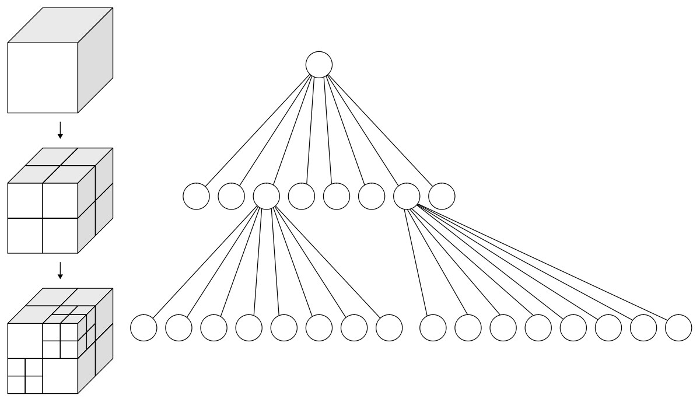
注æ„：
- 使用octreeæ„味ç€å¯ä»¥ä½¿ç”¨ä¸åŒå¤§å°çš„cell size，ä¸æ–细分大的cellæ¥è¾¾åˆ°é«˜åˆ†è¾¨ç‡ã€‚å³ä¸æ–ç²¾ç»†åŒ–ä½“ç´ æ¥è¾¾åˆ°é«˜åˆ†è¾¨ç‡
- OGN是在八å‰æ ‘上æ“作。用binary occupancy mapsæ¥è¡¨ç¤ºç”Ÿæˆçš„形状
- åŒæ—¶OGN也是çµæ´»çš„，å³å¯ä»¥ä»»æ„指定层数和层的é…ç½®
- OGN是end-to-end的，å¯ç”¨åå‘ä¼ æ’计算
åŸç†
最左边的“dense blockâ€ç”±æ™®é€šçš„3Då·ç§¯å±‚组æˆï¼Œè¾“出$d_1 \times d_2 \times d_3 \times c$大å°çš„4D tensor。
然å这个4D tensor被转æ¢ä¸ºé”®å€¼å¯¹ï¼ˆindex-value pairs）å˜å‚¨åœ¨hash tableä¸ï¼Œvalue就是一个voxel内的特å¾å‘é‡ã€‚
然åæ¥ä¸‹æ¥çš„octree block就会预测octree新生æˆçš„结æ„ã€å’Œç›¸åº”生æˆçš„内容（特å¾å‘é‡ï¼‰ã€‚
多次通过octree block处ç†å°±ä¼šç”Ÿæˆé«˜ç²¾åº¦çš„ä½“ç´ è¡¨ç¤ºã€‚
å®ç°
Octreeç¼–ç 法
ä½œç”¨ï¼šå°†ä½“ç´ ç©ºé—´ç”¨octree表示，那么对voxel gridçš„æ“作就å¯ä»¥è½¬æ¢ä¸ºå¯¹octreeçš„æ“作
基äºå“ˆå¸Œè¡¨çš„Octreeç¼–ç （å¯ä»¥å®ç°å¸¸æ•°æ—¶é—´çš„å…ƒç´ è·å–）：
Octree cell的空间åæ ‡$\mathtt{x}=(x,y,z)$ï¼Œå…¶åœ¨æ ‘ä¸çš„层级（分辨ç‡ç‰çº§ï¼‰ä¸º$l$，其内容为$v$。
将其转æ¢ä¸ºç´¢å¼•$m=\mathcal{Z}(\mathtt{x},l)$，其ä¸$\mathcal{Z}(\cdot)$是Z-order curve。
那么就形æˆäº†é”®å€¼å¯¹$(m,v)$。äºæ˜¯å…«å‰æ ‘就是$O=\{(m,v)\}$
那么数æ®æ“作和更新都在hash tableä¸è¿›è¡Œã€‚
查值函数（ä»å…«å‰æ ‘$O$ä¸è·å–值）：

Octree Generating Networks
binary occupancy values $v=\{0,1\}$
由普通3Då·ç§¯ç”Ÿæˆ$d_1 \times d_2 \times d_3 \times c$大å°çš„4D tensor，然å被转æ¢æˆoctree，并将数æ®å˜å‚¨åœ¨hash tableä¸ã€‚

图ä¸ä¸ºäº†ç¤ºæ„的简便起è§ï¼Œç”¨2D voxel替代3D voxelæ¥å±•ç¤ºã€‚
propagated features是指需è¦å¤„ç†æˆ–ç»†åˆ†çš„ç½‘æ ¼ç‰¹å¾
empty是指ä¸æ˜¯å®ä½“çš„ç½‘æ ¼
filled是指被å æ®ã€æ˜¯å®ä½“çš„ç½‘æ ¼
mixed是指需è¦ç»†åˆ†çš„ç½‘æ ¼ï¼ˆä¸GT相比既有emptyåˆæœ‰filled）
OGN-Conv
OGN-Conv需è¦å¤„ç†ç”±å“ˆå¸Œè¡¨è¡¨ç¤ºçš„特å¾å›¾ã€‚OGN-Conv支æŒæ¥é•¿å·ç§¯å’Œä¸Šé‡‡æ ·å·ç§¯ã€‚
基本åŸç†ï¼ˆç±»ä¼¼äºâ€œim2colâ€å’Œâ€œcol2imâ€å‡½æ•°ï¼‰ï¼šå°†hash table转å˜ä¸ºfeature matrix，然åä¸æƒé‡çŸ©é˜µç›¸ä¹˜ï¼Œå†å¤åŸå›hash table
OGN-Loss
predictions就是判æ–voxel是empty/filled/mixedä¸çš„哪ç§ï¼Œæ˜¯3分类问题。用$1^3$å·ç§¯å’Œsoftmaxå®ç°å³å¯ã€‚
最å°åŒ–predictionsä¸the cell state of the ground truth的交å‰ç†µï¼š
$p_m^i$是输出概ç‡å€¼ï¼Œ$M_l$是第$l$层的å¶å集åˆã€‚é‚£ä¹ˆæ€»ç›®æ ‡å‡½æ•°å°±æ˜¯å…¨éƒ¨å±‚çš„$\mathcal{L_l}$的求和。
OGN-Prop
将预测出æ¥æ˜¯â€œmixedâ€çš„å–出æ¥ä½œä¸ºè¾“出。å¯èƒ½è¿˜è¦å–出一些其他的邻居，以便用äºæ¥ä¸‹æ¥çš„å·ç§¯è®¡ç®—。
æ ¹æ®åœ¨æµ‹è¯•é˜¶æ®µæ˜¯å¦çŸ¥é“Octreeçš„GTï¼Œä¼ æ’æ–¹å¼åˆ†ä¸ºï¼šProp-Known方法（例如è¯ä¹‰åˆ†å‰²ï¼Œç»“æ„ä¸å˜ï¼Œåªéœ€è¦ä¸GTåšå¯¹æ¯”å³å¯ï¼‰å’ŒProp-Pred方法（例如三维é‡å»ºï¼Œç»“æ„需è¦ä½ 预测，需è¦è®ç»ƒåˆ†ç±»æ¨¡å‹æ¥åˆ¤æ–æ¯ä¸ªvoxel是empty/filled/mixedä¸çš„哪ç§ï¼‰ã€‚ä¸è¯¦è¿°ã€‚
MarrNet（2017.11）
NIPS2017《MarrNet: 3D Shape Reconstruction via 2.5D Sketches》
paper下载：http://papers.nips.cc/paper/6657-marrnet-3d-shape-reconstruction-via-25d-sketches
概述
ä»å•å¼ 图片é‡æ„出3D voxel-based reconstruction。ä»RGB图得到2.5D表示，å†è½¬æ¢æˆ3D形状（two-step）。MarrNetå¯ä»¥åœ¨synthetic dataæ•°æ®ä¸Šè®ç»ƒç„¶å在real data上进行self-supervisedçš„fine-tune（一定程度上解决了domain adaptation问题）。MarrNet是end-to-endçš„å¯è®ç»ƒæ¨¡å‹ï¼Œè¾¾åˆ°äº†SOTA。
2D → 2.5D → 3D的优点：
- First, compared to full 3D shape, 2.5D sketches are much easier to be recovered from a 2D image; models that recover 2.5D sketches are also more likely to transfer from synthetic to real data.
- Second, for 3D reconstruction from 2.5D sketches, systems can learn purely from synthetic data.
- Third, we derive differentiable projective functions from 3D shape to 2.5D sketches; the framework is therefore end-to-end trainable on real images, requiring no human annotations
注：
- å–åMarrNetæ˜¯å› ä¸ºä¸David Marr’s theory of perception相近
- intrinsic images（æ述物体内在固有å±æ€§çš„å¯åˆ†ç¦»çš„本质图åƒï¼‰ï¼šä¾‹å¦‚depthã€surface normalsã€silhouetteç‰ç‰
- Reprojection Consistencyåªåœ¨fine-tuneä¸ä½¿ç”¨ï¼›é¢„è®ç»ƒä½¿ç”¨ä¸GT voxel gird比较的交å‰ç†µã€‚
- 本文定性分æ（图片展示）比较多，定é‡åˆ†æ比较少（åªæœ‰äººç±»è‚‰çœ¼æ¯”较结æœå’Œä¸€ä¸ªIoU结论）
- 我感觉本文的ablation study说æœåŠ›ä¸è¶³ï¼Œå³ä¸èƒ½è¯´æ˜fine-tune是有效的，并ä¸èƒ½è¯´æ˜Reprojection Consistency的设计是起到å®é™…作用的。详è§å®éªŒçš„第二部分。
åŸç†

用2D CNN的方法生æˆ2.5D图，然åå°†2.5D图用encoder-decoder方法生æˆä½“ç´ è¡¨ç¤ºã€‚ç”¨reprojection consistency lossç¡®ä¿3Dä¸2.5D匹é…。
å®ç°
2.5D Sketch Estimation
用encoder-decoder结æ„生æˆ2.5D表示。用ResNet-18ç¼–ç ，将256x256çš„RGB转å˜ä¸º8x8x256的特å¾å›¾ã€‚然å用decoderæ¢å¤æˆ256x256çš„depth, surface normal, and silhouette images
3D Shape Estimation
用encoder-decoder结æ„生æˆ3Dä½“ç´ ã€‚è¾“å…¥depthå’Œnormalå›¾ï¼ˆæ–½åŠ ä»¥silhouette imagesæ©è†œï¼‰ï¼Œç„¶å用å·ç§¯è½¬å˜ä¸º200ç»´å‘é‡ï¼Œç„¶å用3Då·ç§¯ç”Ÿæˆ128x128x128çš„ä½“ç´ è¡¨ç¤ºã€‚
Reprojection Consistency
使得3D表示ä¸2.5D表示相一致，å³å°†2.5D投射到3D空间ä¸ï¼Œä½“ç´ ä¹Ÿéœ€è¦å…·æœ‰ä¸2.5Dçš„æ述相一致的性质。reprojection consistency loss分为depth reprojection losså’Œsurface normal reprojection loss。并且reprojection consistency loss对voxelå¯æ±‚导，使得å¯ä»¥ç”¨åå‘ä¼ æ’计算和优化。
è®°3D voxel grid在$(x,y,z)$处å˜åœ¨è¯¥voxel的概ç‡ä¸º$v_{x,y,z}\in[0,1]$，深度图在$(x,y)$处的值为$d_{x,y}$，法å‘图在$(x,y)$处的法å‘为$n_{x,y}=(n_a,n_b,n_c)$。并且å‡è®¾æ˜¯æ£äº¤æŠ•å½±ï¼ˆæ³¨æ„这里ä¸æ˜¯ç›¸æœºæˆåƒçš„投影模å‹ï¼‰

depth reprojection lossçš„ç›®æ ‡æ˜¯ï¼šå°†depth imageçš„point投影到3Dä¸ï¼Œä½¿å¾—这个3D pointæ°å¥½å‡ºç°åœ¨3D voxel reconstructionä¸ï¼Œå¹¶ä¸”该点的视线å‰æ–¹æ— é®æŒ¡ã€‚

surface normal reprojectionçš„ç›®æ ‡æ˜¯ï¼šä½¿å¾—è¯¥ç‚¹åœ¨3D切平é¢ä¸Šçš„邻居å˜åœ¨
已知法å‘$n_{x,y}=(n_a,b_b,n_c)$必定ä¸$n_x’=(0,-1,n_b/n_c)$ã€$n_y’=(-1,0,n_a/n_c)$å‚直。那么voxel在$(x,y,z)\pm n_x’$å’Œ$(x,y,z)\pm n_y’$的值必定为1（当这些点在silhouette image以内时æ‰ç®—）。
Training paradigm
将“2.5D sketch estimationâ€å’Œâ€œ3D shape estimationâ€åˆ†åˆ«åœ¨synthetic images上预è®ç»ƒï¼šThe 3D interpreter is trained using ground truth voxels and a cross-entropy loss（注æ„预è®ç»ƒæ˜¯ç”¨ä¸GT比较的交å‰ç†µï¼ï¼‰
然åå†åœ¨çœŸå®å›¾ç‰‡ä¸Šfine-tune：The reprojection consistency loss is used to fine-tune the 3D estimation component of our model on real images, using the predicted normal, depth, and silhouette。固定decoder of the 3D estimatorï¼ˆå› ä¸ºå®ƒåŒ…å«äº†3D形状的先验，ä¸å¸Œæœ›æ”¹å˜ï¼‰ï¼Œåªfine-tune the encoder（å¦ä¹ æ˜ å°„åˆ°decoderåˆç†çš„特å¾ç©ºé—´ä¸ï¼‰ã€‚è¿™ç§fine-tune类似自监ç£ï¼Œå¯ä»¥åœ¨æ— ä»»ä½•æ ‡æ³¨çš„å•å¼ 测试图片上进行fine-tune。
å®éªŒ
3D Reconstruction on ShapeNet
生æˆçš„形状具有smoother surfaces and finer details
Our full model achieves a higher IoU (0.57) than the direct prediction baseline (0.52).
direct prediction baseline：ä¸ç»è¿‡2.5D表示，直æ¥åŸºäº3Då·ç§¯çš„ä½“ç´ ç”Ÿæˆ
3D Reconstruction on Pascal 3D+
ç°åœ¨ShapeNet上预è®ç»ƒï¼Œç„¶åfine-tune them on the PASCAL 3D+ dataset
上图的ablation study表æ˜ï¼Œéœ€è¦å›ºå®šdecoder of the 3D estimator进行fine-tuneæ‰èƒ½å–得更好的fine-tune效æœã€‚
但感觉本文的ablation study说æœåŠ›ä¸è¶³ï¼Œæ–‡ä¸è¯´The model trained on synthetic data provides a reasonable shape estimateå’ŒOur final model, fine-tuned with the decoder fixed, keeps the shape prior and provides more details of the shape，这åªæ˜¯ä½œè€…自己的观点，并没有数æ®æ”¯æ’‘，并且“human studiesâ€ä¸å¹¶æ²¡æœ‰fine-tuneå‰å的“preferencesâ€å¯¹æ¯”，并ä¸èƒ½è¯´æ˜fine-tune是有效的，å³å¹¶ä¸èƒ½è¯´æ˜Reprojection Consistency的设计是有作用的。
作者认为IoUæŒ‡æ ‡ä¸å¥½ï¼Œä¸èƒ½æ述精细结æ„ç‰ï¼Œæ出“human studiesâ€ï¼Œå³äººç±»è‚‰çœ¼æ¯”较MarrNetå’Œç«äº‰å¯¹æ‰‹DRC哪个效æœæ¯”较好。效æœå½“然是说MarrNet比较好啦。
MarrNetä¸èƒ½å¤åŸå¤æ‚çš„ã€ç»†å¼±çš„结æ„，而且silhouette maskä¸èƒ½ç²¾ç¡®ä¼°è®¡ã€‚
3D Reconstruction on IKEA
IKEA furnitureæ•°æ®é›†ï¼Œour model can deal with mild occlusions in real life scenarios
Extensions
We further train MarrNet jointly on all three object categories, and our model successfully recovers shapes of different categories
LSM（2017.8）
NIPS2017《Learning a Multi-View Stereo Machine》
paper下载：http://papers.nips.cc/paper/6640-learning-a-multi-view-stereo-machine
概述
利用n幅图åƒï¼ˆn≥1）以åŠè¿™äº›æ‘„åƒæœºçš„内外å‚（camera posesï¼‰ï¼Œæ±‚å‡ºç‰©ä½“çš„ä½“ç´ é‡å»ºï¼ˆVoxel LSM）或相应的n幅深度图（Depth LSM）。LSM端到端å¯å¾®åˆ†ã€‚æ ¸å¿ƒæ€æƒ³ï¼šåˆ©ç”¨æŠ•å°„关系将2Dæ’列的特å¾ä¸3Dæ’列的特å¾ç›¸äº’转æ¢ï¼Œä¸”能æ¤è¿‡ç¨‹å¯å¾®åˆ†ï¼Œä½¿å…¶åˆ©ç”¨äº†ç©ºé—´æŠ•å½±å…³ç³»çš„å‡ ä½•å…ˆéªŒã€‚
注：
- 多视角立体视觉（Multi-view stereopsis，简称MVS）：给定物体的多幅图åƒã€è¿™äº›å›¾åƒæ‰€åˆ†åˆ«æ‹æ‘„çš„æ‘„åƒæœºçš„姿æ€ï¼ˆå†…å‚和外å‚ï¼‰ï¼Œè¯•æ±‚ç‰©ä½“çš„å‡ ä½•è¡¨ç¤ºï¼ˆ3D结æ„/深度图ç‰ï¼‰
- LSM == Learnt Stereo Machine
- our system is able to better use camera pose information leading to significantly large improvements while adding more views（然而对比的网路（3D-R2N2）是add pose information in a fully connected manner，并没有专门对æ¤è®¾è®¡è¿‡ï¼‰
- å¯èƒ½ä½œè€…è°ƒå‚和优化了很久。。。
TODO IDEAï¼šå°†å‡ ä½•æŠ•å½±ç‰å…³ç³»ç¼–ç 且使得å¯å¾®åˆ†ï¼Œä½¿å¾—å¯ä»¥åå‘ä¼ æ’。
å®ç°

简述：输入n幅图åƒï¼Œç„¶åç»è¿‡2D CNN特å¾æå–出2D的特å¾å›¾ã€‚å†åˆ†åˆ«ä½¿ç”¨â€œunprojectionâ€æ“作得到3Dæ’列的体特å¾$\mathcal{G}^f_i$。然å使用RNN将其全部整åˆæˆä¸€ä¸ªä½“特å¾$\mathcal{G}^p$。å†å°†å…¶ç”¨3Då·ç§¯å¾—到$\mathcal{G}^o$。如æœæƒ³å¾—åˆ°ä½“ç´ è¡¨ç¤ºï¼Œåˆ™ç›´æ¥ä½¿ç”¨3Då·ç§¯ç”Ÿæˆå³å¯ï¼›å¦‚æœæƒ³å¾—到相应的深度图，则使用“projectionâ€æ“作转æ¢ä¸º2D特å¾å›¾ä¹‹åå†ä½¿ç”¨2Då·ç§¯ä¸Šé‡‡æ ·å³å¯ã€‚
2D Image Encoder
用UNet生æˆç‰¹å¾å›¾ã€‚ä»å›¾åƒ$\{I_i\}^n_{i=1}$转å˜ä¸ºç‰¹å¾å›¾$\{\mathcal{F}_i\}^n_{i=1}$
Differentiable Unprojection
输入特å¾å›¾å’Œç›¸æœºå§¿æ€ï¼Œè¾“出3Dæ’列的特å¾ã€‚
å³ä»ç‰¹å¾å›¾$\{\mathcal{F}_i\}^n_{i=1}$转å˜ä¸º3D gird$\{\mathcal{G}_i^f\}^n_{i=1}$

上图åªæ˜¯æ–¹ä¾¿å›¾ç¤ºè€Œå·²ï¼Œå®é™…上是3D girdå’Œ2D feature map。
å®é™…å®ç°è¿‡ç¨‹ï¼šå°†3D gird center投影到image plane得到è¿ç»çš„åæ ‡ï¼Œç„¶åæ ¹æ®discrete gridçš„feature value用bilinear samplingæ’值得到该3D girdçš„feature
为了å¯ä»¥æ”¯æŒå•å¼ 图片输入，我们还往æ¯ä¸ª3D girdä¸æ·»åŠ å‡ ä½•ç‰¹å¾ï¼ˆä¾‹å¦‚depth valueå’Œray direction）
这个过程是å¯å¾®åˆ†çš„，使得å¯ä»¥ç«¯åˆ°ç«¯è®ç»ƒã€‚
Recurrent Grid Fusion
ä»å¤šä¸ª3D gird$\{\mathcal{G}_i^f\}^n_{i=1}$到å•ä¸ª$\mathcal{G^p} $
使用3D convolutional variant of the Gated Recurrent Unit (GRU)，类似äº3D-R2N2ä¸çš„åšæ³•ã€‚
è®ç»ƒæ—¶éšæœºæ‰“乱输入的顺åºï¼Œå‡å°è¾“入顺åºå¸¦æ¥çš„å½±å“。
3D Grid Reasoning
å°†$\mathcal{G^p} $转å˜ä¸º$\mathcal{G^o} $
使用3D UNet。目的（感觉乱说。。）：use shape cues present in $\mathcal{G^p} $ such as feature matches and silhouettes as well as build in shape priors like smoothness and symmetries and knowledge about object classes enabling it to produce complete shapes even when only partial information is visible
Differentiable Projection
ä»$\mathcal{G^o}$转å˜ä¸ºå¤šä¸ª2D feature map$\{\mathcal{O}_i\}^n_{i=1}$
输入：$\mathcal{G^o}$和相机姿æ€ã€‚输出：2D feature map$\mathcal{O}$

上图åªæ˜¯æ–¹ä¾¿å›¾ç¤ºè€Œå·²ï¼Œå®é™…上是3D girdå’Œ2D feature map。
å®é™…å®ç°è¿‡ç¨‹ï¼šæœ‰å¤šä¸ªå¹³è¡Œäºç›¸æœºå¹³é¢çš„ç‰é—´è·å¹³é¢ï¼ˆå›¾ä¸çš„z=1,2,3å¹³é¢ï¼‰ï¼Œè§†çº¿ray是穿过2D feature mapçš„ç¦»æ•£æ ¼ç‚¹ä¸å¿ƒçš„。由æ¤æ¨ªç©¿ç»è¿‡çš„3D gird的特å¾å€¼å°±ä½œä¸ºç‰¹å¾å€¼ã€‚在3D girdä¸æ˜¯nearest neighbor interpolation而ä¸æ˜¯trilinear interpolation。详情è§ä¸Šå›¾ã€‚
最å使用1x1çš„å·ç§¯å¯ä»¥å‡å°‘channelsçš„æ•°é‡ã€‚
Architecture Details and Experiments
å·ç§¯å‡ä½¿ç”¨instance normalizationå’Œlayer normalization
Voxel LSM (VLSM)：最å使用3Då·ç§¯ä¸Šé‡‡æ ·ã€‚softmax + binary cross entropy loss
Depth LSM (D-LSM)：使用Projectionå°†$\mathcal{G^o}$转å˜ä¸ºå¤šä¸ª2D feature map$\{\mathcal{O}_i\}^n_{i=1}$，然å分别进行1x1å·ç§¯å’Œdeconvolutionä¸Šé‡‡æ ·ï¼Œå…¶ä¸deconvolution有skip connectionsæ¥è‡ªä¹‹å‰çš„image encoder。
Experiments性能：

IM-NET（2018.12）ğŸ‘
CVPR2019《Learning Implicit Fields for Generative Shape Modeling》
概述
使用éšå¼åœºçš„方法æ¥ç”Ÿæˆ3D点云，å处ç†åçš„å½¢æˆçš„mesh具有superior visual quality（higher surface quality）。并在æ’值时表ç°å‡ºè‰¯å¥½çš„过度性质。所使用的implicit field decoder称作IM-NET，å¯ä»¥ç”¨äº3D形状自编ç （å³shape representation learning）（IM-AE）ã€å½¢çŠ¶ç”Ÿæˆï¼ˆIM-GAN）ã€å½¢çŠ¶æ’值ã€å•è§†å›¾3Dé‡å»ºç‰ã€‚å…¶ä¸encoderä¸å±äºæœ¬æ–‡è®¾è®¡èŒƒç•´ï¼Œåªè¦èƒ½å¾—到shape feature的都å¯ä»¥ã€‚
注：
- Our work is the first to introduce a deep network for learning implicit fields for generative shape modeling
- 缺点：è®ç»ƒæ—¶é—´é•¿ï¼ˆå› 为the decoder needs to be applied on each point in the training set），或许å¯ä»¥è€ƒè™‘åªç”Ÿæˆç‰©ä½“表é¢çš„点æ¥æ高速度
TODO IDEA：å期å¯ä»¥è€ƒè™‘用decoderæ¥ç”Ÿæˆå…¶ä»–çš„å±æ€§ï¼Œä¾‹å¦‚颜色ã€çº¹ç†ç‰ã€‚或许还å¯ä»¥ç”¨æ¥åšpart segmentation
åŸç†
decoder的关键是æ€ä¹ˆæ ¹æ®shape feature得到出3Dæ•°æ®ï¼ˆç‚¹äº‘）。这通过判æ–给定点$p$是处äºshape的内部还是外部æ¥å®ç°çš„，那么ä¸é—´çš„分界ç‰å€¼é¢å°±æ˜¯shape的边界。
æ„é€ ä¸€ä¸ªMLP，输入是shape featureå’Œpoint coordinate，输出是判æ–内外部的二分类（sigmoid函数）。
å…¶ä¸è¾“入的point coordinate对空间的å‡åŒ€é‡‡æ ·å¾—åˆ°çš„ï¼Œå› è€Œè¾“å‡ºå½¢çŠ¶çš„åˆ†è¾¨ç‡å¯ä»¥ä»»æ„高。
The skip connections（copy and concatenate）å¯ä»¥ä½¿è®ç»ƒç¨³å®šã€åŠ å¿«è®ç»ƒã€‚
å®ç°
用decoder $f_\theta(p)$为æ¯ä¸ªç‚¹$p$计算“是内部点的概ç‡â€ï¼ˆ$f_\theta(p):[0,1]^3 \rightarrow [0,1]$），然å计算ç‰å€¼é¢ï¼ˆå¦‚3D形状则使用Marching Cubes方法，2D图åƒåˆ™ä½¿ç”¨applying thresholding方法），ä»è€Œå¾—到mesh表示。对äºé—åˆå½¢çŠ¶ï¼ŒGT为$\mathcal{F}(p)$内部å–1外部å–0。
decoderè®ç»ƒæ–¹æ³•ï¼ˆå¯é‡‡å–的方法有两ç§ï¼‰ï¼ˆä½œè€…çš„å®ç°æ–¹å¼æ˜¯ä¸€ä¸ªdecoderåªå¯¹åº”一个物体ç§ç±»ï¼‰ï¼š
- A naive sampling：将è®ç»ƒå½¢çŠ¶çš„空间离散化（voxelize or rasterize），然åå‡åŒ€é‡‡æ ·ã€‚多分辨ç‡é‡‡æ ·ä¾æ¬¡å¾—到$16^3,32^3,64^3,128^3$个点。先用ä½åˆ†è¾¨ç‡è®ç»ƒå†é€æ¸ç”¨é«˜åˆ†è¾¨ç‡è®ç»ƒï¼ˆtrain the model progressively）。大致是立方å¤æ‚度。
- A more efficient approachï¼šé‡‡æ ·æ›´å¤šçš„é 近表é¢çš„点，对离表é¢æ¯”较远的点ä¸é‡‡æ ·ã€‚然åå¯¹é‡‡æ ·çš„æ¯ä¸ªç‚¹éƒ½æœ‰ä¸ªæƒé‡$w_p$ï¼Œæ˜¯è¯¥ç‚¹é‡‡æ ·å¯†åº¦çš„å€’æ•°ï¼Œç”¨ä»¥è¡¥å¿é‡‡æ ·å¯†åº¦çš„å˜åŒ–。大致是平方å¤æ‚度。
æŸå¤±å‡½æ•°ï¼ˆ$S$æ˜¯é‡‡æ ·å¾—åˆ°çš„ç‚¹é›†ï¼‰ï¼š
IM-NET的应用举例
Auto-Encoding：使用3Då·ç§¯ä»$64^3$çš„voxelsä¸æå–128维特å¾ï¼Œç„¶ådecoder使用IM-NET。使用progressive training。
3D shape generation：使用autoencoderä¸è®ç»ƒå¥½çš„encoder的输出作为latent-GAN的输入
single-view 3D reconstruction（SVR）：用ResNetå°†$128\times128$的图åƒç¼–ç æˆ128维的特å¾å‘é‡ã€‚使用autoencoderä¸è®ç»ƒå¥½çš„decoder，固定其å‚æ•°ä¸å˜ï¼Œåªè®ç»ƒResNetçš„å‚数（encoder）å»æœ€å°åŒ–mean squared loss
å®éªŒ
è·å–point cloud之å，转æ¢ä¸ºmesh（如Marching Cubes方法），最å用Poisson-disk Samplingè·å–10000个表é¢çš„点。
作者觉得chamfer distance（CD）ã€mean squared error（MSE）ã€IoU并ä¸èƒ½å¾ˆå¥½çš„æ述物体表é¢çš„视觉性质（例如桌åé¢å‘生一点点上下的移动将剧烈地改å˜IoU的值，但是视觉上的效æœå´å·®ä¸å¤šï¼›å¹¶ä¸”IoUæŒ‡æ ‡å¹¶ä¸æŠµåˆ¶è¡¨é¢çš„凹凸起ä¼ï¼‰ï¼Œæ出使用计算机图形领域的light field descriptor（LFDï¼‰æŒ‡æ ‡ã€‚ä»¥åŠcoverage score（COV-LFD）ã€Minimum Matching Distance（MMD-LFDï¼‰æŒ‡æ ‡ã€‚
æ’值效æœ
优点：cleaner surface boundariesã€smooth part movementsã€handles topology changes
但是ä¸çŸ¥é“如何æ§åˆ¶è¿™ç§å˜åŒ–的过程
DISN（2019.5）ğŸ‘
NIPS2019《DISN: Deep Implicit Surface Network for High-quality Single-view 3D Reconstruction》
paper下载：https://arxiv.org/abs/1905.10711
概述
æ出了一ç§å•è§†å›¾é‡å»ºçš„网络，能生æˆé«˜è´¨é‡çš„3Då½¢çŠ¶ã€‚æ ¸å¿ƒæ˜¯é¢„æµ‹â€œsigned distance fieldâ€ã€‚ä¸ä»…结åˆäº†â€œglobal image featuresâ€ï¼Œè¿˜ç»“åˆäº†â€œlocal features from the patchâ€ï¼Œå› 而能够生æˆæ›´å¤šç»†èŠ‚的高质é‡3D形状（例如细å°ç»“æ„ã€å”æ´ï¼‰ã€‚在å•è§†å›¾é‡å»ºæ–¹é¢è¾¾åˆ°äº†SOTA。但是åªèƒ½ç”¨äºå›¾ç‰‡èƒŒæ™¯å¹²å‡€çš„输入。
注：
- Signed Distance Functions（SDF）是å±äºéšå¼çš„surfaceè¡¨ç¤ºï¼›ä¼ ç»Ÿçš„æ–¹æ³•æ˜¯æ˜¾å¼çš„surface表示（例如mesh）
- DISN == Deep Implicit Surface Network
- åŸå§‹ç”Ÿæˆçš„3D形状是点云，然å用Marching Cubes方法æ¥ç¡®å®šiso-surface（以è·å¾—3D mesh）
- 缺点：è¦ç”Ÿæˆå¾ˆå¤š3D pointsæ‰èƒ½ç¡®å®šç‰å€¼é¢ï¼ˆæœ€å需è¦ä»dense 3D gridä¸é‡‡æ ·æ ¼ç‚¹ä½œä¸ºè¾“入）。
- 优点：生æˆçš„分辨ç‡å¯ä»¥ä»»æ„高
- 还å¯ä»¥æ‰©å±•åˆ°multi-view reconstructionå’Œshape interpolation应用ä¸
- å®ç°ç»†ç²’度å¯èƒ½çš„åŸå› 是Local Feature是ä»imagesä¸çš„å¯¹åº”åŒºåŸŸæŠ ç‰¹å¾å图å®ç°çš„。Local Feature预测出æ¥çš„SDF值å¯ä»¥è®¤ä¸ºæ˜¯æ€»çš„SDF值的残差，残差对应“细粒度/细节â€ã€‚
TODO IDEA：
- IDEA1：生æˆç©ºé—´åˆ†å¸ƒï¼Œç„¶å在分布ä¸é‡‡æ ·å¾—到物体表é¢çš„点。
- IDEA2ï¼šä½¿ç”¨æ— ç¬¦å·çš„Distance Functions（记作$f(p)$），然åéšæœºåˆå§‹åŒ–一个3维空间点$p\in \mathbb{R}^3$，通过求解优化问题$min_{p} \frac{\partial f(p)}{\partial p}$，满足æ¤é—®é¢˜çš„解$p$组æˆçš„一系列的点集就是物体的表é¢ã€‚相当äºç”¨å¯¼æ•°æ¥å¼•å¯¼point在surfaceä¸Šçš„ç§»åŠ¨ã€‚è¿™æ ·ç†æƒ³æƒ…况下åªéœ€è¦åˆå§‹åŒ–一个éšæœºç‚¹å°±èƒ½ä½¿å¾—该点éå†æ•´ä¸ªsurface了
- IDEA3：能å¦å€Ÿé‰´U-Netçš„æ€æƒ³ç”Ÿæˆé«˜åˆ†è¾¨ç‡çš„细粒度SDF？
åŸç†
Signed Distance Functions（SDF）æ述了空间æŸç‚¹åˆ°ç‰©ä½“表é¢çš„有符å·è·ç¦»ã€‚
在物体外部则为æ£å·ï¼Œå†…部则为符å·ï¼Œåœ¨ç‰©ä½“表é¢åˆ™ä¸ºé›¶ã€‚ç»å¯¹å€¼æ˜¯åˆ°è¡¨é¢çš„è·ç¦»ã€‚
然åé‡‡æ ·å¾ˆå¤šä¸ªç‚¹ï¼Œé€šè¿‡é¢„æµ‹SDF的值，å†ç”¨å¯»æ‰¾ç‰å€¼é¢çš„方法æ¥æ±‚得表é¢ã€‚
å®ç°
首先估计相机姿æ€ï¼Œç›®çš„是把3D点投射到2D plane上，用以确定2D feature map上local patchçš„ä½ç½®ã€‚然åå°†point-wise featureã€local featureã€global featureè”åˆèµ·æ¥æ¨æ–SDF的值。
最åé‡‡æ ·dense 3D grid，为æ¯ä¸ªæ ¼ç‚¹é¢„测SDF值，然å用Marching Cubesè·å–3D mesh。
Local Feature是ä»imagesä¸çš„对应区域æå–的，point-wise featureç›´æ¥å°±æ˜¯MLP处ç†ç‚¹åæ ‡ï¼Œglobal featureç›´æ¥å°±æ˜¯CNN处ç†æ•´å¼ 图åƒã€‚
整体结æ„（图ä¸çš„“+â€å·æ˜¯åŠ 法，作者å®éªŒè¡¨æ˜ä¸¤è·¯çš„æ¨æ–（两个decoder）比一路的æ¨æ–（åªä½¿ç”¨ä¸€ä¸ªdecoder）效æœè¦å¥½ï¼‰ï¼š

Camera Pose Estimation
将输入图片用CNNæ¨æ–出ä½ç§»é‡$t$（Translation）和6D旋转表示$b$（Rotation）。由$b$å¯ä»¥ç”¨å…¬å¼è®¡ç®—出旋转矩阵$R$，那么点$p$的空间å˜æ¢å°±æ˜¯$Rp+t$。对aligned model space（å³world spaceï¼‰æ–½åŠ ç©ºé—´å˜æ¢å¾—到“预测的å˜æ¢ç‚¹äº‘â€ï¼Œå†ä¸GT比较就å¯ä»¥è®¡ç®—出Loss。
Loss的计算方法如下（本质是mean squared error，$PC_w$代表world spaceä¸çš„点云，$p_G$代表camera spaceä¸çš„GT）：
SDF Prediction
Point-wise feature：目的是将ä½ç½®å‘é‡æ˜ 射到更高维的空间ä¸å»ï¼ˆå³å›¾ä¸çš„“Point featureâ€ï¼‰
Global feature：利用CNNæ¨æ–全局的特å¾å‘é‡
Local Feature：利用估计出æ¥çš„相机å‚æ•°å°†3D点$p$投射到2D image plane的点$q$å»ï¼Œç„¶å将相应ä½ç½®ä¸Šçš„特å¾åå›¾æŠ å‡ºæ¥å†concat，由æ¤å¾—到local featureã€‚ï¼ˆå› ä¸ºç‰¹å¾å›¾å°ºå¯¸ä¸ä¸€æ ·ï¼Œæ‰€ä»¥å…ˆç”¨åŒçº¿æ€§æ’值å†æŠ 图）
那么SDF的结æœå°±æ˜¯ä¸¤ä¸ªdecoder输出结æœçš„和。å¯ä»¥è®¤ä¸ºæ˜¯ä¸‹é¢è¿™ä¸ªdecoder分支是一ç§â€œresidual SDFâ€ï¼Œå³ä¸€ç§æ®‹å·®é¢„测结æ„。
Loss Functionsï¼šä½¿ç”¨åŠ æƒçš„æŸå¤±å‡½æ•°ï¼Œå«ä¹‰æ˜¯ä½¿å¾—更看é‡GT表é¢é™„è¿‘çš„SDF估计误差（其ä¸$m_1>m_2$）
å®éªŒ
使用ShapeNet，并且train a single network on all categories，使用VGG-16作为CNNçš„æå–特å¾ã€‚以CDã€EMDã€IoUä½œä¸ºæŒ‡æ ‡ã€‚ä¸å¤šç§æ¨¡å‹ï¼ˆå¦‚AtlasNet, Pixel2Mesh, 3DN, OccNet and IMNET）进行比较，å–得较好的性能。详情略。
Neural Renderer（2017.11）
CVPR2018《Neural 3D Mesh Renderer》
paper下载：http://openaccess.thecvf.com/content_cvpr_2018/html/Kato_Neural_3D_Mesh_CVPR_2018_paper.html
概述
å°†Renderer的渲染过程近似å¯å¾®åŒ–，使得渲染器（Renderer）å¯ä»¥åµŒå…¥åˆ°ç¥ç»ç½‘络结æ„ä¸æ¥ã€‚渲染的对象是3D mesh，生æˆ2D图åƒã€‚ç”±æ¤ä½œè€…æ ¹æ®Neural Rendereræ出了两ç§åº”用：single-image 3D mesh reconstruction with silhouette image supervisionå’Œgradient-based 3D mesh editing with 2D supervision（such as 2D-to-3D style transfer and 3D DeepDream），展ç°äº†å°†Renderer集æˆåˆ°ç¥ç»ç½‘络ä¸çš„巨大å¨åŠ›
难点：如何将rasterization的过程å¯å¾®åˆ†
注：
polygon mesh的优点：compactness（容易表示ã€å‚数少）ã€geometric properties（suitability for geometric transformations. The rotation, translation, and scaling of objects are represented by simple operations on the vertices.）
渲染过程：Rendering consists of projecting the vertices of a mesh onto the screen coordinate system, and generating an image through regular grid sampling。å者的过程（rasterization）是离散的ã€ä¸å¯å¾®åˆ†çš„，需è¦æˆ‘们近似梯度，ä»è€Œå®ç°åå‘ä¼ æ’算法
Our proposed renderer can flow gradients into texture, lighting, and cameras as well as object shapes.（mesh + texture + lighting + … = 2D rendered image）
Polygon mesh表示法：3D顶点$\{v_i^o\}$å’Œé¢${f_j}$（其ä¸$f_j$是3ç»´å‘é‡ï¼Œå†…容是三角形é¢çš„顶点的索引）
2D-to-3D style transfer：
é£æ ¼è¿ç§»ï¼šå°†content mesh的“contentâ€å’Œstyle image的“styleâ€èåˆåˆ°è¾“出的output mesh上。需è¦ç”¨content lossè¡¡é‡contentçš„è¿ç§»æŸå¤±ã€style lossè¡¡é‡styleçš„è¿ç§»æŸå¤±
$Mesh \rightarrow Image$æ供了对顶点和é¢çº¹ç†çš„梯度æµï¼Œå› æ¤å¯ä»¥ä¿®æ”¹é¢çº¹ç†ï¼Œå°†é£æ ¼è¿ç§»åˆ°é¢çº¹ç†ä¸Šã€‚Renderer使得一些对图åƒåœ°æ“作（例如é£æ ¼è¿ç§»ï¼‰è¿ç§»åˆ°3Dæ•°æ®ç»“æ„ä¸æˆä¸ºå¯èƒ½ã€‚
å®ç°
Rendering pipeline and its derivative
å°†3D顶点$\{v_i^o\}$投射到2Då¹³é¢ä¸Šå¾—到$\{v_i^s\} $，æ¤è¿‡ç¨‹æ˜¯å¯å¾®åˆ†çš„
然åå°†$\{v_i^s\} $å’Œ$\{f_j\}$通过rasterization得到2D rendered image：考虑2D rendered image上的一个pixel点$P_j$（其颜色值$I_j$），如æœè¿™ä¸ªpixelçš„centerä½äºface $f_i$的内部，则æ¤pixel的颜色值$I_j $被赋值（染色）æˆ$I_{ij}$
图ä¸åªè€ƒè™‘$x_i$是å¯å˜çš„，其他暂时冻结ä½ä¸è€ƒè™‘å…¶å˜åŒ–
我们将çªå˜çš„过程è¿ç»åŒ–（线性æ’值），得到“（d）â€æ‰€ç¤ºçš„效æœã€‚我们å‰å‘ä¼ æ’使用图“（b）â€æ‰€ç¤ºçš„曲线，åå‘ä¼ æ’的导数使用“（e）â€æ‰€ç¤ºçš„曲线。
å…¶ä¸é¢œè‰²çªå˜é‡$\delta_j^I=I(x_1)-I(x_0)$，ä½ç§»å˜åŒ–é‡$\delta_j^x=x_1-x_0$，那么斜线的斜ç‡å°±æ˜¯$\frac{\delta_j^I}{\delta_j^x}$
考虑åå‘ä¼ æ’的误差信å·$\delta_j^p = \frac{\partial Loss}{\partial I_j}$，当$\delta_j^p>0$æ—¶$I_j$会å‡å°‘，当$\delta_j^I>0$æ—¶$I_j$会å¢å¤§ã€‚为了ä¸ä½¿å¾—åšæ— 用功，我们è¦æ±‚$\delta_j^I \delta_j^p < 0$æ‰å¯ä»¥æ›´æ–°å‚数，所以：
类似地，当åƒç´ 点本身就在face的内部时，则如下图所示：
并且其导数如下所示：
当多个faces时，our rasterizer draws only the frontmost face at each pixel, and do not flow gradients if they are occluded by surfaces not including $v_i$
Texture：ä½äºface$\{v_1,v_2,v_3\}$上的点$p$å¯ä»¥è¢«åˆ†è§£ä¸º$p=w_1v_1+w_2v_2+w_3v_3$，那么用$(w_1,w_2,w_3)$å°±å¯ä»¥è¡¨ç¤ºå‡ºface$\{v_1,v_2,v_3\}$上的点。其纹ç†textureå°±å¯ä»¥åˆ©ç”¨$(w_1,w_2,w_3)$ä» texture image$s_t\times s_t \times s_t$（each face has its own texture image）ä¸æŸ¥å€¼è·å¾—。ä¸éš¾éªŒè¯å¿…定满足$w_1 + w_2 + w_3 = 1$
Lighting：考虑ç¯å¢ƒå…‰$l^a$和定å‘å…‰æº$l^d$，那么pixel color$ I_j $ç»è¿‡å…‰æºæ¸²æŸ“å的颜色就是$I^l_j = (l^a+(n^d\cdot n^j)l^d)I_j$（$n^j$是face上pixelçš„å•ä½æ³•å‘，$n^d$是定å‘å…‰æºçš„å•ä½æ–¹å‘）
Single image 3D reconstruction
æ€æƒ³ï¼šmatch the ground truth silhouettes。有点åƒencoder-decoder结æ„
3D generator idea：deform an isotropic sphere with 642 vertices to generate a new mesh, therefore the mesh we use is specified by 642*3 parameters。然å使用silhouette loss（鼓励IoU越大越好）和smoothness loss（鼓励é¢é¢å¤¹è§’越æ¥è¿‘180°越好）è®ç»ƒæ¤generation function
å°†maskä½œä¸ºé™„åŠ é€šé“åŠ å…¥åˆ°RGB图ä¸
Gradient-based 3D mesh editing
We optimize a 3D mesh consisting of vertices, faces, and textures based on its rendered image
In this section, we propose a method to transfer the style of an image onto a mesh
å…¶ä¸content lossç¡®ä¿3D msehçš„shape相åŒï¼›style lossç¡®ä¿é£æ ¼ç›¸åŒï¼ˆå›¾ä¸çš„Loss指的是style loss）；åŒæ—¶ä½¿ç”¨äº†regularizer for noise reduction。总Loss就是所有lossçš„åŠ æƒå’Œï¼Œå¯¹é¡¶ç‚¹å’Œçº¹ç†æœ€å°åŒ–loss的值
类似地，还å¯ä»¥ç”¨äº3D DeepDream
Pixel2Mesh（2018.4）
ECCV2018《Pixel2Mesh: Generating 3D Mesh Models from Single RGB Images》
paper下载：http://openaccess.thecvf.com/content_ECCV_2018/html/Nanyang_Wang_Pixel2Mesh_Generating_3D_ECCV_2018_paper.html
概括
æ出了å•è§†å›¾è¾“入的end-to-end框æ¶ï¼Œèƒ½ç”Ÿæˆä¸‰è§’å½¢ç½‘æ ¼ï¼ˆtriangular mesh）。使用GCNæ¥å¤„ç†mesh的顶点特å¾ï¼Œå°†æ¤çƒå½¢å˜æ¥æ‹Ÿåˆè¡¨é¢ï¼ŒåŒæ—¶åˆ©ç”¨å›¾åƒçš„特å¾ã€‚meshä»ç²—到精细化，顶点数å˜å¤šã€‚定义了4ç§lossæ¥ä¼˜åŒ–结æœã€‚结æœå…·æœ‰æ›´å¥½çš„精细度，超越了SOTA。
注：
- å½¢å˜æ³•çš„优点：deep network is better at predicting residual。a series of deformations can be added up together, which allows shape to be gradually refined in detail。it provides the chance to encode any prior knowledge to the initial mesh。
- é™åˆ¶æ¡ä»¶ï¼šåªèƒ½ç”¨äºäºæ ¼ï¼ˆgenus）为零的shapeï¼Œå› ä¸ºæ¤çƒæ²¡æœ‰â€œå”â€
- å…·æœ‰ä¸Šé‡‡æ ·å±‚ï¼Œç‚¹æ•°é€æ¸å¢å¤šã€‚Deformation block则负责精细化mesh
åŸç†
å°†meshåˆå§‹åŒ–为æ¤çƒï¼Œç„¶å用GCN对vertex featureæ–½åŠ å˜æ¢ï¼Œä»è€Œå®ç°å¯¹3D vertex pointçš„ä½ç½®ç©ºé—´å˜æ¢ã€‚然åä¸Šé‡‡æ ·graph，以å¢åŠ 点数。ä¸æ–é‡å¤æ¤è¿‡ç¨‹ï¼Œå®ç°ä»ç²—到精的过渡。image featureèåˆè¿›å…¥deformation blocksä¸æ¥å®ç°å…¨å±€shape的把æ¡ã€‚
å®ç°
整体由image feature networkå’Œcascaded mesh deformation network组æˆã€‚
deformation blocks：将图åƒçš„2D特å¾æå‡åˆ°3D vertex的特å¾ä¸æ¥ï¼ˆ1280维），然åcancat（1280+128=1408维），å†GCN（输出空间åæ ‡3维和特å¾128维）。
graph unpooling layersï¼šä¸Šé‡‡æ ·å›¾ï¼Œå¢åŠ 顶点数，ä»è€Œå¯ä»¥å®ç°æ›´ç²¾ç»†çš„结æ„
Initial ellipsoid
ellipsoid with average size placed at the common location
initial feature contains only the 3D coordinate of each vertex（3维。特å¾æå–之åæ‰æ˜¯128ç»´çš„feature）
GCN
å°†mesh用vertexå’Œedgeè¡¨ç¤ºï¼Œé‚£ä¹ˆå°±æ˜¯ä¸€å¼ graph。æ¯ä¸ªvertex上都有个feature。通过一次GCN层，得到å˜æ¢å的特å¾ï¼š
å…¶ä¸$w_0$å’Œ$w_1$都是$d_{l+1}\times d_{l} $尺寸的å˜æ¢çŸ©é˜µï¼Œå³ç»è¿‡ä¸€å±‚GCN层其特å¾å‘é‡çš„维度å¯èƒ½å‘生å˜åŒ–。我们的特å¾å‘é‡$f_p$是“3D空间åæ ‡â€ã€â€œå±€éƒ¨å½¢çŠ¶ç‰¹å¾â€å’Œâ€œè¾“入图åƒç‰¹å¾â€çš„cancat。使用GCNå°†å˜æ¢ç‰¹å¾ï¼Œç‰æ•ˆäºç©ºé—´ç‚¹ä½ç½®çš„å˜æ¢ä»¥åŠç‰¹å¾æå–。
Mesh deformation block
将“input image featureâ€æå‡åˆ°3D空间ä¸çš„点特å¾ï¼Œå¾—到1280维的特å¾ã€‚ä¸128维的形状特å¾concat得到1408维的特å¾ï¼Œå†è¿›è¡ŒGCN，其ä¸ä¸€ä¸ªåˆ†æ”¯é¢„测点的3ç»´åæ ‡ï¼Œå¦ä¸€ä¸ªåˆ†æ”¯é¢„测128维特å¾ã€‚
æå‡åˆ°3D空间：将3D点投射到2Då¹³é¢ä¸Šï¼Œç„¶åæ ¹æ®å›¾åƒä¸çš„gird feature进行åŒçº¿æ€§æ’值得到该点的特å¾ã€‚å…¶ä¸feature mapså–自VGG16，一共有1280个通é“，所以输出的特å¾æ˜¯1280维。
残差结æ„çš„graph based ResNet（G-ResNet）有助äºefficient exchange of the information between verticesã€æå‡æ„Ÿå—é‡ã€‚
所有的deformation blocksä¼¼ä¹æ˜¯å…±ç”¨åŒä¸€ä¸ªVGG16çš„feature maps
Graph unpooling layer
目的：å¢åŠ 点的数é‡ã€‚使用图ä¸Edge-based的方法。

This edge-based unpooling uniformly upsamples the vertices, and doesn’t causes the imbalanced vertex degrees.
Losses and Regularizations
- Chamfer loss：It is reasonably good to regress the vertices close to its correct position, however is not sufficient to produce nice 3D mesh
- Normal loss：this loss requires the edge between a vertex with its neighbors to perpendicular to the observation from the ground truth. enforce the consistency of surface normal
- Laplacian regularization：prevent the vertices from moving too freely, which potentially avoids mesh self-intersection. encourages neighboring vertices to have the same movement. laplacian regularization to maintain relative location between neighboring vertices during deformation,
- Edge length regularization：edge length regularization to prevent outliers. 鼓励edge越çŸè¶Šå¥½
- 总：就是上é¢4ç§çš„çº¿æ€§åŠ æƒå’Œ
Pixel2Mesh++（2019.8）
ICCV2019《Pixel2Mesh++: Multi-View 3D Mesh Generation via Deformation》
paper下载：https://arxiv.org/abs/1908.01491
概括
ä»å¤šè§†å›¾è¾“å…¥ã€å·²çŸ¥ç›¸æœºå§¿æ€çš„æ¡ä»¶ä¸‹é‡å»ºå‡º3D Mesh，是Pixel2Meshçš„å‡çº§ç‰ˆã€‚åŒæ ·æ˜¯åˆ©ç”¨GCN抽å–顶点的特å¾ã€å¯¹åˆå§‹mesh进行粗到细的形å˜ã€‚ä¸åŒçš„是形å˜çš„过程为：对æ¯ä¸ªé¡¶ç‚¹åˆ†åˆ«æ出形å˜çš„候选点，然å利用projectionã€GCNæ“作ã€ç»“åˆå›¾åƒçš„feature mapså˜æ¢ç‰¹å¾å¾—到æ¯ä¸ªå€™é€‰ç‚¹çš„é‡è¦æ€§ç³»æ•°ï¼Œè¿›è¡Œåæ ‡çš„çº¿æ€§åŠ æƒå¾—到形å˜åçš„åæ ‡ã€‚èƒ½å¤Ÿç”Ÿæˆè§†è§‰æ•ˆæœå¥½çš„Mesh，泛化能力强，达到SOTA。
注：
- Pixel2Mesh生æˆçš„mesh往往åªåœ¨single-image的视角方å‘效æœå¥½ï¼Œå†å…¶ä»–视角下效æœå·®
- 多视图输入的关键åŸç†ï¼šä½¿ç”¨è¯¸å¦‚meanã€stdã€max的统计特å¾ï¼Œå®ç°å¯ä»¥æ¥å—ä»»æ„多视图的输入
- Pixel2Mesh++ç”±perceptual network（VGG16）ã€coarse shape generation（Pixel2Mesh）和Multi-View Deformation Network（MDN）组æˆã€‚
- MDN是end-to-end trainable的。å¯æ¥å—ä»»æ„æ•°é‡çš„视图输入
- 注æ„在MDNä¸æ²¡æœ‰ä¸Šé‡‡æ ·å±‚，ä¸èƒ½å¢åŠ 点的数é‡ã€‚
- 作者主è¦çš„贡献是设计了MDN，而MDN的作用更åƒæ˜¯å¾®è°ƒå·²ç”Ÿæˆçš„mesh
- 候选点（Hypothesis）本质上是对vertex周围ç¯å¢ƒçš„感知，GCN起到类似äºlocal graphçš„neighborhood之间的特å¾äº¤äº’èåˆã€ç‰¹å¾æå–的作用。最åæ ¹æ®GCN得到的scoreæ¥make movement decision。而Pixel2Mesh没有感知vertex周围ç¯å¢ƒçš„能力。
åŸç†
基äºPixel2Meshåšåˆå§‹mesh的生æˆã€‚ä»å¤šè§†å›¾ä¸ç”¨VGG16抽å–特å¾ï¼Œåº•å±‚级称作geometry feature，高层级称作semantic feature。然å为æ¯ä¸ªvertex生æˆå½¢å˜å€™é€‰ç‚¹ï¼Œåˆ©ç”¨å›¾åƒæŠ½å–æ¥çš„特å¾ä¸ºæ¯ä¸ªå€™é€‰ç‚¹è®¡ç®—score，最åæ ¹æ®scoreå’Œ3Dåæ ‡ä½œçº¿æ€§åŠ æƒå¾—到最终形å˜åçš„ä½ç½®ã€‚多次形å˜å³å¯å¾—到输出的mesh。
å®ç°
Deformation Hypothesis Sampling
目的：propose deformation hypotheses（形å˜å€™é€‰ç‚¹ï¼‰for each vertex
å®ç°ï¼šåœ¨æ¯ä¸ªvertexçš„ä½ç½®ä¸Šæ”¾ç½®ä¸€ä¸ªlevel-1 icosahedron（具有42个顶点ã€80个é¢ã€120æ¡è¾¹ï¼‰ï¼Œç„¶å为æ¯ä¸ªvertexæ„é€ ä¸€ä¸ªlocal graph（local graph的边由“level-1 icosahedronâ€çš„120æ¡è¾¹ã€vertex到“level-1 icosahedronâ€çš„顶点的è¿çº¿ç»„æˆã€‚所以一个local graph一共有120+42=162æ¡è¾¹ï¼Œ42+1=43个点）。æ¯ä¸ªé¡¶ç‚¹éƒ½è¦æ„é€ ä¸€ä¸ªlocal graph，然åå–‚ç»™æ¥ä¸‹æ¥çš„“Cross-View Perceptual Feature Poolingâ€æ¥éª¤
Cross-View Perceptual Feature Pooling
目的：assign each node（in the local graph）features from the multiple input color images
大体类似äºPixel2Meshä¸çš„“perceptual feature poolingâ€æ“作。feature mapsæ¥è‡ªVGG16çš„conv1_2ã€conv2_2ã€conv3_3（它们是底层级的geometry feature），一个视图concatèµ·æ¥è¾“出64+128+256=448长度的特å¾ã€‚
考虑到对ä¸åŒæ•°é‡çš„视图输入如æœconcatçš„è¯ä¼šå¾—到ä¸åŒé•¿åº¦çš„feature。我们改而使用统计特å¾ï¼Œå®ç°å›ºå®šé•¿åº¦çš„输出。使用meanã€maxã€std这三ç§ç»Ÿè®¡ç‰¹å¾ã€‚而且使用统计特å¾å¯¹è§†å›¾çš„输入的顺åºå…·æœ‰ä¸å˜æ€§ã€‚所以特å¾é•¿åº¦å˜ä¸º448*3=1344维。å†æŠŠç©ºé—´åæ ‡concatè¿›å»å¾—到1344+3=1347维度的特å¾ã€‚
Deformation Reasoning
目的：reason an optimal deformation for each vertex from the hypotheses using pooled cross-view perceptual features

å®ç°ï¼šå°†local graphå’Œlocal graph nodes feature（å³pooled cross-view perceptual features）丢到scoring network（本质是GCN）ä¸å¾—到æ¯ä¸ªnodesçš„é‡è¦æ€§å¾—分$s_i$（softmax输出å自动满足$\sum_{i=1}^{43} s_i=1$）。若候选点的空间ä½ç½®è®°ä½œ$h_i$（包括vertex，$i=1…43$），那么形å˜åçš„ä½ç½®å°±æ˜¯ä½ç½®çš„çº¿æ€§åŠ æƒï¼š$\sum_{i=1}^{43}s_i h_i$。对æ¯ä¸ªé¡¶ç‚¹éƒ½è¿è¡Œä¸€é，就得到了最终形å˜å的结æœã€‚
Losses
æŸå¤±å‡½æ•°ç…§æŠ„Pixel2Mesh的，但是唯一的区别是作者还extends the Chamfer distance loss to a resampled version，å³ï¼šä»meshçš„face上å‡åŒ€é‡‡æ ·ç‚¹ï¼Œé‡‡æ ·çš„点数æ£æ¯”äºfaceçš„é¢ç§¯ï¼Œç”±æ¤å¯ä»¥é¢å¤–é‡‡æ ·å‡º4000ä¸ªç‚¹ï¼ŒåŠ ä¸Š2466个åŸæœ¬çš„mesh的顶点，总共6466ä¸ªç‚¹ï¼Œæ ¹æ®6466个点计算Chamfer distance loss
re-sample Chamfer loss的功能：helps to remove artifacts in the results，解决了points are not uniformly distributed on the surface的问题
Implementation Details
we use Pixel2Mesh to generate a coarse shape with 2466 vertices → 最终生æˆçš„点的数é‡å°±æ˜¯2466个
å®éªŒ
对比的网络：
- P2M-M：we directly run single-view Pixel2Mesh on each of the input image and fuse multiple results
- MVP2M：we replace the perceptual feature pooling to our cross-view version to enable Pixel2Mesh for the multi-view scenario
- LSM：Learnt Stereo Machine
- 3DR2N2：3D Recurrent Reconstruction Neural Network
性能：Our model significantly outperforms previous methods（based on F-score）
AtlasNet（2018.2）ğŸ‘
CVPR2018《A Papier-Mâché Approach to Learning 3D Surface Generation》
paper下载：http://openaccess.thecvf.com/content_cvpr_2018/html/Groueix_A_Papier-Mache_Approach_CVPR_2018_paper.html
概述
æ出使用基äºæµå½¢ä¸Chartså’ŒAtlases的概念的3Dshapesçš„surface生æˆæ–¹æ³•ã€‚å°†surface表示æˆå¤šä¸ªå±€éƒ¨å°è¡¨é¢çš„集åˆï¼ˆç±»ä¼¼äºCharts的概念）。æ高了精度ã€æ³›åŒ–强ã€èƒ½ç”Ÿæˆä»»æ„精度的分辨ç‡ã€‚AtlasNet的本质是一个3D shape decoder（输入形状æè¿°å输出mesh/pointcloud）。AtlasNetå¯ä»¥åº”用äºå½¢çŠ¶è‡ªç¼–ç ã€3Dé‡å»ºç‰å¤šä¸ªé¢†åŸŸã€‚
注：
- pointcloud的缺点：ä¸èƒ½ç›´æ¥è¡¨ç¤ºä¸é‚»å±…的关系（no surface connectivity），使得很难得到光滑ã€é«˜ä¿çœŸçš„æµå½¢
- polygonal mesh的特点：对光滑æµå½¢çš„分å—å¹³é¢è¿‘ä¼¼
- Surface parameterization： Establishing a connection between the surface of the 3D shape and a 2D domain
- 3Dé‡å»ºæ—¶è¾“入的对象å¯ä»¥æ˜¯pointcloudã€imagesç‰ï¼Œå› 为AtlasNetåªè¦æ±‚特å¾å‘é‡ä½œä¸ºè¾“入，å¯ä»¥ä½¿ç”¨å…¶ä»–网络æå–输入对象的特å¾å‘é‡ä¹‹å作为AtlasNet的输入。
- chart：3D→2D（1个MLP函数）；atlas：a set of charts（多个MLPs）
- AtlasNet的功能：learn an atlas for 2-manifold $\mathcal{S}$
- 缺点：生æˆçš„meshä¸é—åˆï¼Œæœ‰å°å”，ä¸åŒçš„曲é¢å—之间有overlap
æ€æƒ³
å°†2Då•ä½æ£æ–¹å½¢å¹³é¢çš„点集（$[0,1]\times [0,1]$）使用MLPæ˜ å°„åˆ°3D曲é¢ä¸Šã€‚有多个MLP，äºæ˜¯å°±èƒ½å¾—到多个å°çš„3D曲é¢ã€‚多个å°3D曲é¢å°±èƒ½ç»„æˆç‰©ä½“。å³ï¼Œwe seek to approximate the target surface locally by
mapping a set of squares to the surface of the 3D shape
è¿™æ ·1个MLP就能局部生æˆä¸€ä¸ª2-manifold（3D曲é¢ï¼‰äº†
2D→3D：通过MLP得到
3D→2D：UV parameterization of the surface / 2D （UV） embedding to a plane
äºæ˜¯åœ¨2Då¹³é¢ä¸Šçš„性质就能è¿ç§»åˆ°3D曲é¢ä¸ï¼šä¾‹å¦‚2Då¹³é¢æœ‰çº¹ç†ï¼Œåˆ™åœ¨3D曲é¢çš„对应点上也有相åŒçš„纹ç†
生æˆmesh的方法：将方形的2Dmeshæ˜ å°„åˆ°3D空间ä¸ï¼Œå¹¶ä¿æŒç‚¹ä¸ç‚¹ä¹‹é—´çš„è¿æ¥å…³ç³»
å®ç°
Learning to decode a surface
ç›®æ ‡ï¼šæœ‰ä¸€ä¸ªå½¢çŠ¶æè¿°å$\mathtt{x}$（形状特å¾å‘é‡ï¼‰ï¼Œè¯·æ®æ¤ç”Ÿæˆthe surface of the shape
å®ç°ï¼š
- 有N个learnable parameterizations（MLP）$\phi_{\theta_i}$，$i\in\{1,…,N\}$，其ä¸$\theta_{i}$是MLPå‚æ•°
å°†$\mathtt{x}$å’Œ$(0,1)\times(0,1)$é‡‡æ ·çš„ç‚¹$(x,y)$进行cancat，å†é€åˆ°MLPä¸
æŸå¤±å‡½æ•°ï¼šChamfer loss。通过计算两个点集之间的Chamfer Distanceæ¥æ¯”较。
注æ„到MLP并没有æ˜ç¡®ç¦æ¢æ‰€ç¼–ç 的区域é‡å （符åˆatlasçš„è¦æ±‚之一），并且最好覆盖整个shape（全覆盖æ‰èƒ½ä½¿å¾—Chamfer losså˜å°ï¼‰
Implementation details
- auto-encoderä¸çš„encoder是PointNet；形状æè¿°å的维度：1024；输入点云的点数：250~2500
- reconstructionä¸çš„encoder是ResNet-18ï¼›åªè®ç»ƒencoder，而decoder则是autoencoderä¸çš„decoder（固定å‚数，ä¸è®ç»ƒï¼‰
- decoder是4层的MLP：1024（ReLU）ã€512（ReLU）ã€256（ReLU）ã€128（tanh）。使用tanhçš„åŸå› å¯èƒ½æ˜¯ç‚¹äº‘ç»è¿‡å•ä½çƒåŒ–了
- 输出点云的点数：2500
- 2Dé‡‡æ ·æ–¹æ³•ï¼šç½‘æ ¼è§„åˆ™é‡‡æ ·
Mesh generation
有三ç§æ–¹æ³•ï¼š
- Propagate the patch-grid edges to the 3D points：å³transfer a regular mesh on the unit square to 3D，使得å¯ä»¥ç”Ÿæˆé«˜åˆ†è¾¨ç‡çš„mesh，是一ç§è‡ªç„¶çš„生æˆmeshçš„å¥½æ–¹æ³•ï¼ˆå› ä¸ºmesh的拓扑è¿æ¥å…³ç³»æºè‡ªäº2D gridçš„edgeçš„è¿æ¥æ–¹å¼ï¼‰ã€AtlasNet专用，效æœå¥½ã€‘
- Generate a highly dense point cloud and use Poisson surface reconstruction（PSR）：生æˆå¾ˆå¤šç‚¹ä»¥åŠä»–们的normals，然å用PSR方法æ¥å¾—到meshã€Baseline专用，AtlasNetå¯ç”¨ã€‘
- Sample points on a closed surface rather than patches：ä»3Dçƒé¢é‡‡æ ·è¾“入的点，而ä¸æ˜¯ä»å¤šä¸ª2Då•ä½æ£æ–¹å½¢ä¸é‡‡æ ·ã€‚å¯ä»¥ç”Ÿæˆé—åˆå›¾å½¢ï¼Œä½†æ˜¯ä¼¼ä¹åªèƒ½ç”¨ä¸€ä¸ªMLP。ã€AtlasNet专用，记作“1 sphereâ€ã€‘
å®éªŒ
æ•°æ®é›†ï¼šstandard ShapeNet Core dataset
è¯„ä»·æŒ‡æ ‡ï¼šChamfer distance（CD，用äºè¡¡é‡pointcloud）和Metro（average Euclidean distance between the two meshes，用äºè¡¡é‡mesh）
Baseline/Oracle
- “Points baselineâ€ï¼šå¦‚上一幅图的（a）所示。直æ¥è¾“å…¥1024维度的形状æè¿°å，然å输出2500*3=7500维度，å³2500个点（MLP层数为1024（ReLU）ã€512（ReLU）ã€256（ReLU）ã€7500（tanh））。最终输出的是pointcloud，所以没有“Metroâ€æŒ‡æ ‡ã€‚
- “Pointsbaseline + normalsâ€ï¼šè¾“å‡ºç©ºé—´æŒ‡æ ‡å’Œæ³•å‘é‡ï¼Œä¸€ä¸ªç‚¹æ˜¯$\mathbb{R}^6$。然åæ ¹æ®åˆ‡å¹³é¢æ¥å¢åŠ 点的数é‡ï¼ˆAugmentation）。然å使用PSR算法得到mesh。最终输出的是mesh。
- Oracle：ä»GTä¸éšæœºé‡‡æ ·ç‚¹ï¼Œç„¶å计算CDå’ŒMetro的值。代表了模å‹æ‰€èƒ½è¾¾åˆ°çš„æ€§èƒ½çš„ä¸Šç•Œï¼ˆå› ä¸ºæ˜¯ç”±GT生æˆçš„）
3D reconstruction结æœ

其他å®éªŒ
Generalization across object categories：略
Singleview reconstruction：略
Shape interpolation
Finding shape correspondences：Notice that we get semantically meaningful correspondences, such as the chair back, seat, and legs without any supervision from the dataset on semantic information.
Mesh parameterization：our inferred atlas usually has relatively high texture distortion. But we can minimize distortion with off-theshelf geometric optimization, yielding small distortion.
Excess of distortion
Topological issues
Deformable shapes
Deep Marching Cubes（2018.6）
CVPR2018《Deep Marching Cubes: Learning Explicit Surface Representations》
paper下载：http://openaccess.thecvf.com/content_cvpr_2018/html/Liao_Deep_Marching_Cubes_CVPR_2018_paper.html
概述
æ出了一ç§end-to-endçš„surface prediction方法。å³â€œDifferentiable Marching Cubes Layerâ€ï¼Œä½¿å¾—å¯ä½œä¸ºç¥ç»ç½‘络的最å一层æ¥è¾“出mesh。并且设计了loss函数使得å¯ä»¥åœ¨sparse point supervision上è®ç»ƒã€‚并且能补全形状ã€åˆ†ç¦»ç‰©ä½“的内外表é¢ï¼Œå³ä½¿åœ¨GT是稀ç–å’Œä¸å®Œå…¨çš„情况下。å¯ä»¥ç”¨äºä»ç‚¹äº‘ä¸æ¨æ–形状。å¯ä»¥ä¸å„ç§encoderã€shape inference techniques结åˆä½¿ç”¨ã€‚
特点：
- differentiable, end-to-end
- predicts explicit surface representations of arbitrary topology
- avoids the need for defining auxiliary losses or converting target meshes to implicit distance fields
- more accurate reconstructions while also handling noise and missing observations
- separating inside from outside even if the ground truth is sparse or not watertight
- easily integrating additional priors about the surface（e.g., smoothness）
- does not require explicit surface ground truth
注：
- 普通的marching cubes的输入是SDF，而deep marching cubes输入是$O$å’Œ$X$。所以网络的输出类å‹ä¹Ÿè¦è¦æ±‚ä¸åŒã€‚
- ç°æœ‰çš„3D surface predictionä¸èƒ½end-to-endè®ç»ƒï¼Œå› 为他们需è¦ä¸é—´è¡¨ç¤ºï¼ˆä¾‹å¦‚TSDFï¼‰ï¼Œå› è€Œéœ€è¦å处ç†ï¼ˆä¾‹å¦‚marching cubes算法）
- 普通的marching cubes算法ä¸å¯å¾®åˆ†
- ä¼ ç»Ÿçš„è¡¨é¢é‡å»ºæ–¹æ³•ï¼š
- Voxel based method
- output: voxel occupancy / TSDF
- post-processing: Marching cubes
- Point based method
- output: points
- post-processing: Poisson surface reconstruction / SSD
- Voxel based method
- ä¼ ç»Ÿæ–¹æ³•çš„ç¼ºç‚¹ï¼š
- the ground truth of the implicit representation is often hard to obtain, e.g., in the presence of a noisy and incomplete point cloud or when the inside and outside of the object is unknown.
- these methods only optimize an auxiliary loss defined on an intermediate representation and require an additional postprocessing step for surface extraction. Thus they are unable to directly constrain the properties of the predicted surface.
å®ç°
ä¼ ç»Ÿçš„Marching Cubes（é本文的方法）
分为两æ¥ï¼š
- estimation of the topology：确定cell的拓扑类å‹ï¼ˆé¢çš„顶点ä½ç½®ä¸ç¡®å®šï¼Œåªæ˜¯çŸ¥é“拓扑概念上的ä½ç½®ï¼‰
- prediction of the vertex locations of the triangles：确定é¢çš„顶点的具体ä½ç½®
è®°å·ï¼š
- $D \in \mathbb{R}^{N\times N\times N}$为signed distance field。表示到surface的有å‘è·ç¦»ã€‚内部为æ£ï¼Œå¤–部为负，表é¢ä¸ºé›¶ã€‚å…¶å…ƒç´ è®°ä½œ$d_n$，其ä¸$n=(i,j,k)\in \mathbb{N}^3$是索引
å®ç°ï¼š
首先确定cell’s surface topology T。å‡è®¾$D\in \mathbb{R}^{3\times 3\times 3}$，那么相当äºè¿™27个点分布在二阶é”方的å„个角å—的顶角上，它åªæ˜¯ç‚¹ã€‚cell就是指二阶é”方的8个角å—，它具有体积。然åæ ¹æ®d是å¦ç¬¦å·æ”¹å˜ï¼ˆç©¿è¿‡é›¶ï¼‰ç¡®å®šè¿™ä¸ªcell的拓扑类å‹ã€‚（åªæ˜¯ç¡®å®šäº†æ‹“扑类å‹ï¼Œå›¾ä¸è“色é¢çš„顶点的具体ä½ç½®å¹¶ä¸çŸ¥é“，需è¦ä¸‹ä¸€æ¥æ¥è®¡ç®—）
然å如æœè¿™ä¸ªcell内部å˜åœ¨è“色平é¢ï¼Œå°±éœ€è¦è®¡ç®—è“色平é¢é¡¶ç‚¹çš„具体ä½ç½®ã€‚使用线性æ’值得到。（如æœæ˜¯ä¸Šå›¾ä¸çš„左上角的第一ç§ç±»å‹ï¼Œé‚£å°±ä¸ç”¨è®¡ç®—了，这ç§ç±»å‹å¾€å¾€å‡ºç°åœ¨ç‰©ä½“的内部ã€æˆ–者是远离物体的外部）
Differentiable Marching Cubes
è®°å·ï¼š
æ¯ä¸ªæ ¼ç‚¹çš„伯努利分布å‚数：$O\in [0,1]^{N\times N\times N}$，$o_n\in[0,1]$
æ¯ä¸ªæ ¼ç‚¹çš„é¢é¡¶ç‚¹çš„å移é‡ï¼š$X\in [0,1]^{N\times N\times N\times3}$，$x_n\in [0,1]^3$
计算：
- é‚£ä¹ˆæ ¼ç‚¹$n$处äºçŠ¶æ€$t\in \{0,1\}$（1代表被å æ®ï¼ˆçº¢è‰²è¡¨ç¤ºï¼‰ï¼Œ0代表ä¸è¢«å æ®ï¼ˆç»¿è‰²è¡¨ç¤ºï¼‰ï¼‰æ—¶çš„概ç‡ä¸º$p_n(t)=(o_n)^t(1-o_n)^{1-t}$
- 那么grid cell n处äºçŠ¶æ€$T$时的概ç‡ä¸º$p_n(T)=\prod_{m\in \{0,1\}^3}(o_{n+m})^{t_m}(1-o_{n+m})^{1-t_m}$。其ä¸$2^8$ç§é¡¶ç‚¹çš„æ’列方å¼ä¸åªæœ‰140ç§æ˜¯æœ‰æ•ˆçš„拓扑形å¼ã€‚
- 那么entire grid的概ç‡åˆ†å¸ƒå°±æ˜¯$p(\{T_n\})=\prod_{n\in\mathcal{T}}p_n(T_n)$。其ä¸$\mathcal{T}=\{1,…,N-1\}^{3}$有$(N-1)^3$个cell
网络结æ„图：（输入点云，然å预测出$O$å’Œ$X$，ä»è€Œé¢„测出mesh）
Loss：（包å«4项）
- Point to Mesh Loss：最å°åŒ–observed 3D points到meshå¹³é¢çš„å‡ ä½•è·ç¦»ä¹‹å’Œã€‚作用：directly
measures the geometric error of the inferred mesh - Occupancy Loss：鼓励边界上ä¸è¢«å æ®ï¼Œé¼“励内部被å æ®
- Smoothness Lossï¼šé¼“åŠ±ç›¸é‚»æ ¼ç‚¹çš„å æ®çŠ¶æ€ä¸å˜
- Curvature Loss：鼓励相邻cell的normal orientation的smooth transitions
DeepSDF（2019.1）ğŸ‘
CVPR2019《DeepSDF: Learning Continuous Signed Distance Functions for Shape Representation》
概述
DeepSDF能生æˆå…·æœ‰å¤æ‚拓扑结æ„çš„ã€é«˜è´¨é‡çš„ã€é—åˆçš„è¿ç»è¡¨é¢ã€å¯ç”¨äºå½¢çŠ¶æ’值ã€å½¢çŠ¶è¡¥å…¨ã€‚一个DeepSDF能够表示一个类别的形状（一类物体è®ç»ƒä¸€ä¸ªæ¨¡å‹ï¼Œè€Œä¼ 统的SDF方法一个模å‹åªèƒ½è¡¨ç¤ºä¸€ä¸ªç‰©ä½“的形状）。å–得了SOTA。而且模å‹çš„大å°ç¼©å°äº†ã€‚
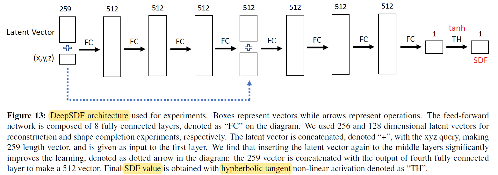
本质：使用“coordinate + shape latent vectorâ€ä½œä¸ºè¾“入，通过MLPå输出SDF值。è®ç»ƒæ—¶åŒæ—¶ä¼˜åŒ–“shape vectorâ€å’Œâ€œMLP parametersâ€ï¼ˆæ¢¯åº¦ä¸‹é™ä¼˜åŒ–，最å得到的shape vector就是è®ç»ƒé›†çš„shape vector）。æ¨æ–“latent vectorâ€æ—¶ä½¿ç”¨æ¢¯åº¦ä¸‹é™ä¸æ–è¿ä»£ä¼˜åŒ–“latent vectorâ€çš„åˆå§‹å€¼ï¼Œä»è€Œå¾—到符åˆobservationçš„latent vector的值。
注：
- DeepSDF最有用的用途是Shape Completion（inference + feed-forward + marchingcubes）ã€Shape Interpolation（inference + interpolate + feed-forward + marchingcubes）
- SDF：有å‘è·ç¦»å‡½æ•°ï¼šå†…部负数ã€å¤–部æ£æ•°ã€è¡¨é¢ä¸ºé›¶ã€‚
- “auto-decoderâ€å¯ç”¨äºé™å™ªã€è¡¥å…¨ã€é”™è¯¯æ£€æµ‹
- 补全：åªè¾“入部分数æ®ï¼Œç„¶å生æˆlatent vector（形状信æ¯ï¼‰ï¼Œå†ç”Ÿæˆå®Œæ•´çš„shape prediction
- 最å还是è¦ç”¨marching cubesæ¥ç”Ÿæˆç‰å€¼é¢
- feed-forward耗时çŸï¼›inference耗时长（对latent vector的优化速度慢，或许å¯ä»¥è€ƒè™‘替æ¢æ‰ADAM优化器）
TODO IDEA：
- 或许å¯ä»¥ç”¨äºç”ŸæˆåŠ¨æ€çš„3D物体ã€æˆ–者是带有纹ç†æ质的物体。
- ä¸åŒç‰©ä½“形状在latent vector分布ä¸çš„ä½ç½®ä¸èƒ½æŒ‡å®šã€‚或许latent vectorå¯ä»¥æ˜¯ç±»ä¼¼one-hot的，一个å˜é‡ä»£è¡¨ä¸€ä¸ªç‰©ä½“ç§ç±»ï¼Œæ¯ä¸ªå˜é‡éƒ½æœä»é«˜æ–¯ï¼Œç„¶ååªéœ€è¦ä»é«˜æ–¯é‡‡æ ·å°±èƒ½å¾—到物体形状了。å¯èƒ½ç±»ä¼¼äºVariational Auto-Decoder？
å®ç°
通过å¦ä¹ 一个“shape-conditioned classifierâ€ï¼Œå†³ç–边界（最å一层是tanh）就是物体表é¢ã€‚
使用“auto-decoderâ€ï¼Œæ¥å—latent vectorå’Œpoint coordinate作为输入，输出SDF值。
- training：已知observation（点åæ ‡&SDF）æ¥ä¼˜åŒ–latent vector $z$å’Œmodel parameters $\theta$
- inference：已知observation（点åæ ‡&SDF）求latent vector $z$
- feed-forward：已知latent vector $z$和点åæ ‡ï¼Œæ±‚SDF
è®°å·ï¼š
- coordinate $x$丢到模å‹é‡Œå¾—到的SDF估计（latent vector为$z$）：$f_\theta(z,x)$
- 第i个形状的coordinate $x$处真å®çš„SDF值：${SDF^i}(x)$
- 第i个形状的数æ®é›†ï¼ˆåŒ…å«ç‚¹åæ ‡ã€çœŸå®çš„SDF值）：$X_i := \{(x_j,s_j):s_j=SDF^i(x_j)\}$
第一ç§æ–¹å¼æ˜¯ä½¿ç”¨ä¸Šå›¾ï¼ˆa）所示的方法。但是一个模å‹åªèƒ½å¯¹åº”一个物体。故我们ä¸é‡‡ç”¨ã€‚
第二ç§æ–¹å¼æ˜¯ä½¿ç”¨ä¸Šå›¾ï¼ˆb）所示的方法。一个模å‹å¯ä»¥å¯¹åº”一整类物体（例如å„ç§å°è½¦ï¼‰ã€‚æˆ‘ä»¬é‡‡æ ·è¿™ç§æ–¹æ³•ã€‚但是code未知，我们使用“auto-decoderâ€çš„å¦ä¹ æ–¹å¼æ¥è‡ªåŠ¨å¦ä¹ code的分布（注æ„这里的codeä¸æ˜¯äººä¸ºæŒ‡å®šçš„分布，例如ä¸æ˜¯one-hot）
è®ç»ƒï¼ˆtraining）：我们首先åˆå§‹åŒ–code为一个很å°çš„值（例如$\mathcal{N}(0,0.01^2)$），然åæ ¹æ®å·²çŸ¥çš„coordinateå’ŒSDF值æ¥è®ç»ƒç½‘络，åå‘ä¼ æ’æ—¶æ ¹æ®$\frac{\partial Loss}{\partial z_i}$å’Œ$\frac{\partial Loss}{\partial \theta}$分别更新Code $z_i$å’ŒParameter $\theta$。
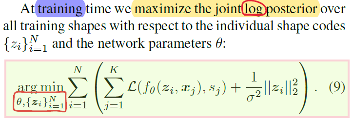
æ¨æ–（inferenceï¼‰ï¼šæ ¹æ®å·²çŸ¥çš„coordinateå’ŒSDF值，利用åå‘ä¼ æ’çš„$\frac{\partial Loss}{\partial z}$，更新优化Code $z$
å‰å‘ä¼ æ’（暂且称作feed-forwardå§ï¼‰ï¼šæ ¹æ®latent vector $z$和点åæ ‡$x$得到预测的SDF值
注：
还å¯ä»¥è®¡ç®—得到surface normals：方法一和二（采用SDF的方法）都能通过计算$\frac{\partial f_\theta(x)}{\partial x}$æ¥è®¡ç®—估计得到的表é¢æ³•å‘ï¼ˆå› ä¸ºæ²¿ç€æ³•çº¿æ–¹å‘SDFå˜åŒ–最快）
对äºä¸€ä¸ªç‚¹çš„æŸå¤±å‡½æ•°ï¼š$\mathcal{L}(f_\theta(x),s)=|clamp(f_\theta(x),\delta)-clamp(s,\delta)|$，以$f_\theta(x)$ã€$s$为xã€y轴画图得（$\delta$越å°è¶Šèƒ½æ述表é¢çš„细节）：
“auto-decoderâ€æ˜¯å¯¹â€œcoded shape deepsdfâ€çš„è®ç»ƒæ–¹å¼ã€‚
为什么ä¸ç”¨â€œencoder-decoderâ€ç»“æ„：
ä¼ ç»Ÿçš„â€œencoder-decoderâ€ç»“æ„的使用方法：
- è®ç»ƒï¼šâ€œencoder-decoderâ€ä¸¤éƒ¨åˆ†ä¸€èµ·è®ç»ƒ
- 测试：丢æ‰è®ç»ƒå¥½çš„encoder。在形状补全任务ä¸ï¼Œé¦–先准备待补全的è®ç»ƒæ•°æ®ï¼Œç„¶åé‡æ–°è®ç»ƒå¦ä¸€ä¸ªencoder。
作者认为è®ç»ƒâ€œencoder-decoderâ€ç»“æ„时，最å使用时åªæ˜¯ç”¨åˆ°äº†decoder，而没有用到è®ç»ƒå®Œæˆçš„encoder，æ大浪费了计算力。并且使用“encoder-decoderâ€è¿›è¡Œå½¢çŠ¶è¡¥å…¨æ—¶ï¼Œè®ç»ƒæ–°çš„encoder时的è®ç»ƒæ•°æ®ä¹Ÿè¦æ˜¯â€œå¾…补全â€çš„æ•°æ®é›†ï¼ˆè¿™æ ·æ‰èƒ½ä»è¾“å…¥æ¨æ–出latent vector）。
DeepSDFå¯ä»¥åªè¾“入部分的observation（例如depth mapä¸ç‚¹ï¼Œåªæ˜¯éƒ¨åˆ†çš„表é¢çš„点），然åæ¨æ–出latent vector $z$的值，所以å¯ä»¥ç”¨äºå½¢çŠ¶è¡¥å…¨ã€‚
整个å®ç°éƒ½æ˜¯åŸºäºåœ¨ç‰©ä½“对é½çš„æ¡ä»¶ä¸‹è¿›è¡Œçš„（in a canonical pose）。å¦åˆ™åŒä¸€ä¸ªcoordinateä¼šå› ä¸ºä¸å¯¹é½ï¼ˆä¾‹å¦‚旋转）而会有ä¸åŒçš„SDF值
å®ç°
å®æ–½ç»†èŠ‚è§å‰é¢çš„部分。下é¢æ˜¯å®éªŒéƒ¨åˆ†ï¼ˆä½¿ç”¨ShapeNet）：
Representing Known 3D Shapes（represent training data）
用äºæµ‹è¯•latent vectorå’ŒMLP是å¦èƒ½å……分表示精细的结æ„。所使用的物体是在è®ç»ƒé›†å†…的。
å®ç°è¿‡ç¨‹ï¼šåˆ©ç”¨GT（在è®ç»ƒé›†ä¸ï¼‰çš„$X$（包å«point coordinateå’ŒSDF）æ¥inference得到这个物体所对应的latent vector的值；然å输入latent vectorå’Œå¯†é›†ç½‘æ ¼é‡‡æ ·çš„point coordinate，通过æ£å‘ä¼ æ’得到预测的SDF值，å†ç”¨marching cubesæ¥é‡å»ºè¡¨é¢ã€‚
Representing Test 3D Shapes（use learned feature representation to reconstruct unseen shapes）
用äºæµ‹è¯•â€œå¾—到latent vector的方法â€æ˜¯å¦èƒ½ç”¨äºå…¨æ–°æœªè§è¿‡çš„物体
å®ç°è¿‡ç¨‹ï¼šåˆ©ç”¨GT（ä¸åœ¨è®ç»ƒé›†ä¸ï¼‰é€šè¿‡inference的方法得到latent vectorï¼›å†æ£å‘ä¼ æ’ã€marching cubes得到表é¢ã€‚
Shape Completion（apply shape priors to complete partial shapes）
已知物体表é¢çš„一些部分（例如depth mapåªæ¶‰åŠä¸€äº›è¡¨é¢ï¼‰ï¼Œæ±‚整个物体的形状
å®ç°è¿‡ç¨‹ï¼šæ ¹æ®depth mapå¯ä»¥çŸ¥é“ä½äºsurface上的点，然å估计surface normal。沿ç€surface normalçš„æ–¹å‘å移$\pm \eta$çš„è·ç¦»å¾—到两个点（ä½äºsurface两侧且è·ç¦»surface$\eta$çš„ä¸¤ä¸ªç‚¹ï¼‰ï¼Œè¿™æ ·å°±å¾—åˆ°SDFçš„æ ·æœ¬æ•°æ®ã€‚利用SDFæ ·æœ¬æ•°æ®å…ˆinference得到latent vector，å†æ£å‘ä¼ æ’ã€marching cube就能得到mesh。
注：depth map的视角需è¦ä¸ç‰©ä½“对é½ã€‚作者还é¢å¤–ä»â€œä»‹äºsurfaceå’Œcamera之间的free-spaceâ€ä¸éšæœºé‡‡æ ·ä¸€äº›ç‚¹ä½œä¸ºempty space points（或者称作free-space observations，且SDF值大äºé›¶ï¼‰ï¼Œä½¿å¾—æ ·æœ¬çš„ç‚¹æ•°å¢åŠ ，且ä¸ä¼šåœ¨free-spaceä¸ç”Ÿæˆå¥‡æ€ªçš„å½¢çŠ¶ã€‚è€Œä¸”æ·»åŠ äº†â€œfreespace lossâ€ã€‚
Latent Space Shape Interpolation（learn smooth and complete shape embedding space from which we can sample new shapes）
过程：利用training最å时得到的latent vector（或inference得到的都å¯ä»¥ï¼‰ï¼Œå°†ä¸¤ä¸ªç‰©ä½“çš„latent vector线性æ’值å†feed-forword得到ä¸é—´çŠ¶æ€çš„物体
GEOMetrics（2019.1）
PMLR《GEOMetrics: Exploiting Geometric Structure for Graph-Encoded Objects》
paper下载：http://proceedings.mlr.press/v97/smith19a/smith19a.pdf
概述
能够生æˆAdaptive mesh（顶点密度ä¸å‡åŒ€çš„mesh），作者是第一个。æ出了0N-GCN layers，é¿å…了顶点信æ¯çš„平滑；æ出了Adaptive Face Splitting，在高曲ç‡çš„地方自动分割三角é¢ç‰‡ï¼ˆæ”¹å˜æ‹“扑），使得å¯ä»¥ç”Ÿæˆç»†èŠ‚；改进了Chamfer Loss得到Point-to-point losså’ŒPoint-to-surface loss。æ出了global mesh loss用äºæ¯”对形状的全局信æ¯ã€‚并最å用å•å›¾é‡å»ºmesh的任务æ¥è¯´æ˜å…¶æ€§èƒ½ã€‚达到了SOTA，视觉效æœå¥½ï¼Œæ‰€éœ€çš„顶点数较少。
基本æµç¨‹ï¼ˆä¸»è¦åŸºäºdeformation）：对åˆå§‹mesh（çƒï¼‰é™„带特å¾ï¼ˆä¾‹å¦‚通过project投射到CNNçš„feature map上），然å用0N-GCN进行meshçš„å½¢å˜å’Œç‰¹å¾å˜æ¢ï¼Œæœ€å用face splittingç–略将曲ç‡å¤§çš„三角é¢ç‰‡æ·»åŠ 顶点继ç»ç»†åˆ†ã€‚ä¸æ–é‡å¤å¾—到最终输出mesh。
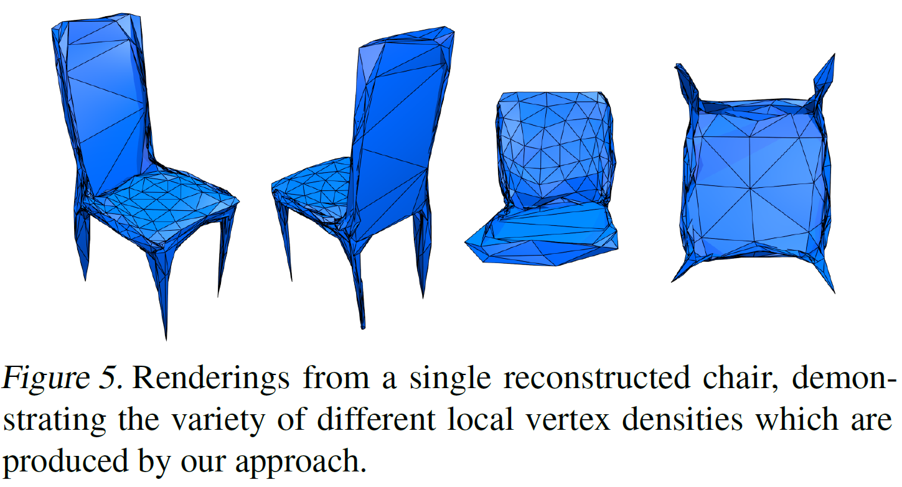
注：
GEOMetrics == Geometrically Exploited Object Metrics。利用了graph-encoded objectsçš„ä¼˜åŠ¿å’Œå‡ ä½•ç»“æ„
å°†triangle mesh视作graph便å¯ä»¥ä½¿ç”¨å›¾å·ç§¯çš„方法
ä¼ ç»Ÿmeshé‡å»ºçš„效æœï¼šé¡¶ç‚¹å’Œé¢çš„分布比较å‡åŒ€ã€‚没有充分利用mesh表示的独有优势。应当在细节处放置更多顶点ã€åœ¨å¹³å¦å¤„æ”¾ç½®é¡¶ç‚¹è¾ƒå°‘ã€‚è¿™æ ·æ‰èƒ½with smaller space requirements and higher precision
普通的GCNå¯èƒ½ä¼šä½¿å¾—顶点的信æ¯å¹³æ»‘（是由äºå–neighborhood meané€ æˆçš„），作者æ出对äºä¸€äº›ç‰¹å¾ç»´åº¦ä¸èšåˆé‚»å±…ä¿¡æ¯è€Œæ˜¯ä¿æŒåŸæ ·ï¼Œä»¥é¿å…特å¾çš„平滑（over-smoothing）。
普通的Chamfer Distanceåªæ˜¯çº¦æŸvertex position，并没有约æŸä¸‰è§’é¢ç‰‡ã€‚
face splitting技术似ä¹ç”Ÿæˆäº†è®¸å¤šä¸æƒ³è¦çš„细节，例如：
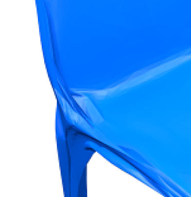
åŸç†
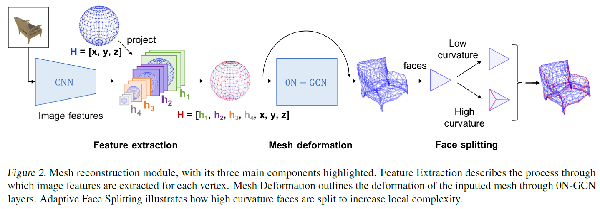
上图是mesh reconstruction moduleçš„æ„æˆï¼ˆä¸»è¦åŠŸèƒ½ï¼šç»†åŒ–输入的mesh）。整个系统由m=3ä¸ªè¿™æ ·çš„module串è”组æˆã€‚系统的输入是çƒçŠ¶meshå’Œä¸€å¼ å›¾ç‰‡ã€‚ä¸åŒmoduleçš„cnn feature mapå…¶å®éƒ½æ˜¯åŒä¸€ä¸ªã€‚
首先将mesh投射到feature map上使得vertices带上feature map上的feature vector。然å使用作者å‘æ˜çš„GCN（Zero-Neighbor Graph Convolutional Networks）进行graph的特å¾æå–å’Œdeformation。最å使用face splitting技术分割曲ç‡å¤§çš„é¢ï¼ˆä»¥æ述细节部分）。最å得到输出的mesh。å†é‡å¤m-1次moduleçš„æµç¨‹ï¼Œæœ€å输出的mesh就是最终结æœã€‚
å®ç°
feature extraction
得到的feature vector应该是以下三者/两者的cancat：
- feature map对应ä½ç½®ä¸Šçš„feature vector
- 3D point的空间åæ ‡
- å‰ä¸€ä¸ªmodule输出的meshçš„feature vector（如æœå½“å‰moduleä¸æ˜¯ç¬¬ä¸€ä¸ªçš„è¯ï¼‰
mesh deformation
使用多个“0N-GCN layersâ€è¿›è¡Œç‰¹å¾å˜æ¢ï¼Œè¾“出residual prediction（ä½ç½®çš„å移é‡ï¼‰ï¼Œé‚£ä¹ˆ3D点的最终ä½ç½®å°±æ˜¯original position + residual prediction
“0N-GCN layersâ€çš„目的：为了解决顶点的特å¾è¢«å¹³æ»‘æ‰çš„问题
ä¼ ç»ŸGCN：$H’=\sigma(AHW+b)$，其ä¸A是NxNçš„é‚»æ¥çŸ©é˜µï¼ŒH是NxF的输入特å¾å‘é‡çŸ©é˜µï¼ŒH’是NxF’的输出特å¾å‘é‡çŸ©é˜µï¼ŒW是æƒé‡çŸ©é˜µï¼Œb是åç½®å‘é‡ï¼Œ$\sigma(\cdot)$是激活函数
方法：一部分特å¾ç»´åº¦å–é‚»æ¥çŸ©é˜µçš„零次幂（identity matrix）以ä¸èšåˆç‰¹å¾ï¼Œå…¶ä½™ç»´åº¦æ£å¸¸èšåˆç‰¹å¾
å³ç°å¦‚今å˜æˆï¼š$H’=HW,\;H’’=\sigma([AH’_{0:i}||A^0 H’_{i:}]+b)$
å…¶ä¸$[\cdot||\cdot]$是concat算符（cancat到矩阵的å³è¾¹ï¼‰ï¼Œä¸”$i\in[0,F’-1]$
但是其ä¸$i$是æ€ä¹ˆé€‰å–çš„ä¸çŸ¥é“。
face splitting
对曲ç‡å¤§çš„曲é¢ï¼Œåœ¨centerä½ç½®æ·»åŠ é¡¶ç‚¹ï¼Œå¹¶æ·»åŠ 3æ¡è¿å‘它的边。
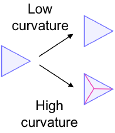
曲ç‡çš„计算方法（似ä¹æ˜¯å®šæ€§è¡¨ç¤ºï¼‰ï¼š
- é¦–å…ˆæ ¹æ®ä¸‰è§’é¢ç‰‡çš„3个顶点，å¯ä»¥è®¡ç®—得到其法å‘$N_f$
- 然å对äºä¸‰è§’é¢ç‰‡$f$，计算其邻居é¢$i\in \mathcal{H}_f$的法å‘é‡$N_i$，并计算$N_i $ä¸$N_f$的夹角$\theta_{f,i}$
- 然å计算$\theta_{f,i}$çš„å¹³å‡å€¼$\frac{1}{|\mathcal{H}_f|}\sum_{i\in \mathcal{H}_f} \theta_{f,i}$便得到在é¢$f$处的曲ç‡$C_f$
æ ¹æ®è®¾å®šçš„曲ç‡é˜ˆå€¼$\alpha$æ¥åˆ¤æ–曲ç‡å¤§ä¸å¤§ï¼Œå¤§çš„è¯å°±è¿›è¡Œface splitting
Differentiable Surface Sampling Losses（Chamfer Loss的改版）
用äºæè¿°local topology，å³ä¸‰è§’é¢ç‰‡çš„约æŸ
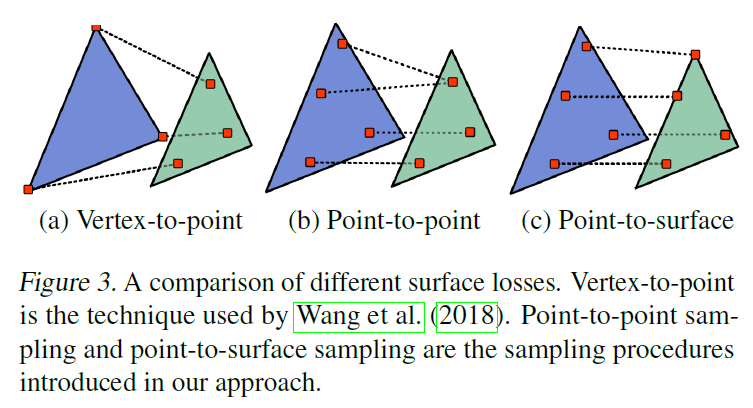
过程：
首先需è¦ä»GT meshå’Œpred meshçš„surfaceä¸é‡‡æ ·ï¼Œåˆ†åˆ«å¾—到点集$S$å’Œ$\hat{S} $
如æœæ˜¯Point-to-pointçš„å½¢å¼ï¼šï¼ˆç‚¹åˆ°ç‚¹çš„è·ç¦»ï¼‰
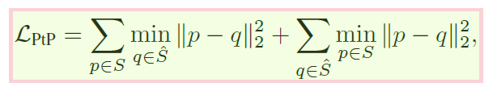
如æœæ˜¯Point-to-surfaceçš„å½¢å¼ï¼šï¼ˆç‚¹åˆ°é¢çš„è·ç¦»ï¼‰
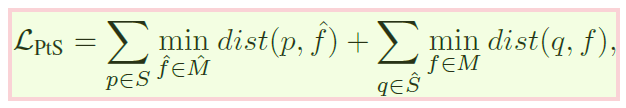
Global Encoding of Graphs（用äºæ述全局信æ¯ï¼‰
global mesh loss，或称作latent loss，è§ä¸‹å›¾ï¼š

是两个latent vector之差的二范数的平方
encoder：stacking 0N-GCN layers，followed by a max pooling
decoder：3D CNN
åšæˆencoder-decoder的结æ„，其ä¸åé¢voxelçš„å½¢å¼ç”¨äºç›‘ç£å¦ä¹ ï¼Œç›®æ ‡ä»…ä»…æ˜¯å¾—åˆ°ä¸ºäº†encoder
Optimization Details
还有an edge length minimizing regularizerã€Laplacian-maintaining regularizer，最åçš„Loss是上述4è€…çš„åŠ æƒå’Œã€‚
Skeleton-bridged Approach（2019.3，Our lab）
CVPR2019《A Skeleton-Bridged Deep Learning Approach for Generating Meshes of Complex Topologies From Single RGB Images》
概述
ä»å•è§†å›¾é‡å»º3Dmesh。“Approachâ€ä¸»è¦ç”±3部分组æˆï¼ˆå³3个stages），第一部分得到curve- and surface-like skeleton points，第二部分将skeleton转æ¢ä¸ºvolume然åæå‡åˆ†è¾¨ç‡ï¼Œç¬¬ä¸‰éƒ¨åˆ†å°†volume转æ¢ä¸ºmesh然ådeform。æ¯ä¸ªstages都有独立的input imageçš„CNNæ¥ä¿®æ£æ¯ä¸€stage积累的预测åå·®ã€‚å› è€Œå°†pointã€voxelã€mesh表示都用了一é。能够生æˆå…·æœ‰å¤æ‚拓扑ã€ç»†èŠ‚精细的mesh，优äºç°æœ‰ç®—法。并公开ShapeNet-Skeletonæ•°æ®é›†ã€‚
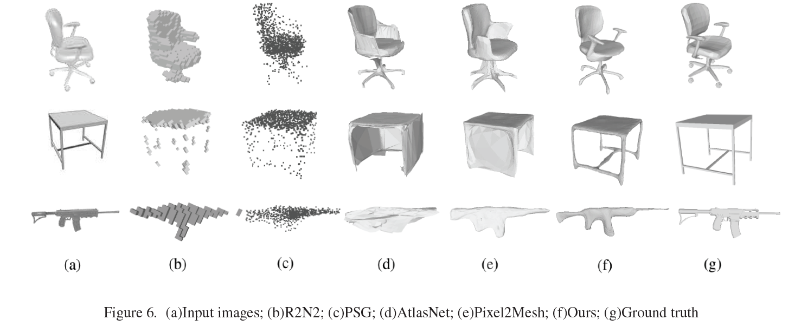
å¯å‘：
- å°†åŸå§‹è¾“å…¥é‡æ–°ä»¥DNNçš„æ–¹å¼è入或许能å¢åŠ 性能（例如skip-connectionã€images informationçš„å†æ¬¡è¾“å…¥ç‰ç‰ï¼‰
- 其他：网络的ä¸åŒæ·±åº¦æ”¾ç½®å¤šä¸ªloss有助äºæ¢¯åº¦ä¿¡æ¯çš„å›ä¼ 和优化（虽然本文没涉åŠï¼‰
注：
- 通俗地说就是多ç§æ–¹æ³•çš„串è”使用（大致是：AtlasNet + 3DCNN + Pixel2mesh）
- 使用skeleton具有好性质：topology preservationã€lower complexity to learn。但å®è´¨ä¸Šå…¶skeleton是点集。
- skeleton的GT是meso-skeleton
åŸç†
整体æµç¨‹è§ä¸‹å›¾
- å°†image转skeleton points，仿照AtlasNet：将1Dã€2Dæ˜ å°„åˆ°3D得到curve- and surface-like skeleton points
- 利用voxelization转æ¢ä¸ºä½“ç´ è¡¨ç¤º
- 利用3DCNNæå‡ä½“ç´ åˆ†è¾¨ç‡å¾—到高分辨ç‡çš„ä½“ç´ è¡¨ç¤º
- 利用Marching Cubeså°†ä½“ç´ è½¬æ¢ä¸ºmesh，利用QEM算法å‡å°‘顶点数
- å°†mesh进行deformation，模仿Pixel2mesh：使用GCNæ¥deformation
å®ç°
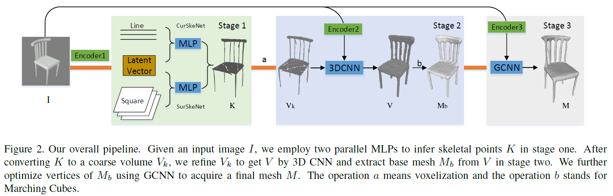
Learning of Meso-Skeleton（stage 1）
形状的meso-skeleton表示为medial axis。3D模å‹çš„medial axisç”±curve skeletons（由点组æˆçš„线）ã€median sheets（由点组æˆçš„é¢ï¼‰ç»„æˆã€‚
æ•°æ®é›†çš„制作：将3D模å‹è½¬æ¢ä¸ºç‚¹äº‘。用Deep points consolidation算法æå–meso-skeleton pointsã€‚æ ¹æ®å…¶é‚»å±…用PCAå°†meso-skeleton points划分为curve-like或surface-like。
å®ç°ï¼š
- 用ResNet-18将图åƒç¼–ç 得到latent vector
- CurSkeNet （上é¢é‚£æ¡åˆ†æ”¯ï¼‰ï¼šå°†$[0,1]$çš„1Då®æ•°çº¿æ®µåˆ©ç”¨MLPæ˜ å°„åˆ°3D空间ä¸å¾—到3D曲线。一共有20个这类MLP。（MLPçš„å‰é¢å‡ 层是ReLUã€æœ€å一层是tanh）
- SurSkeNet（下é¢é‚£æ¡åˆ†æ”¯ï¼‰ï¼šå°†$[0,1]^2$çš„2Då®æ•°æ£æ–¹å½¢åˆ©ç”¨MLPæ˜ å°„åˆ°3D空间ä¸å¾—到3D曲é¢ã€‚一共有20个这类MLP。（MLPçš„å‰é¢å‡ 层是ReLUã€æœ€å一层是tanh）
- è®ç»ƒï¼šä½¿ç”¨Chamfer Distance作为Lossã€ä½¿ç”¨Laplacian smoothness作为æ£åˆ™é¡¹ï¼ˆä½¿å¾—得到的surface光滑）
From Skeleton to Base Mesh（stage 2）
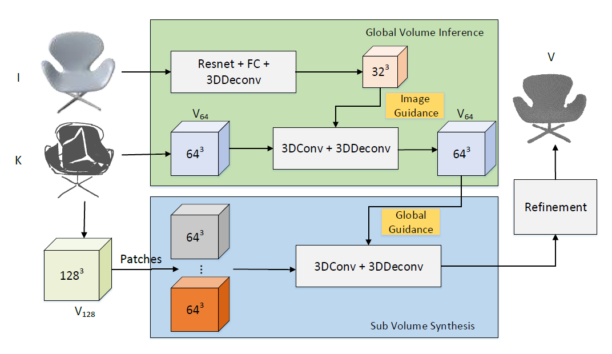
如上图，使用了两者ä¸åŒåˆ†è¾¨ç‡çš„ä½“ç´ è¡¨ç¤ºã€‚ä¸Šé¢çš„绿色部分作为全局指导，下é¢çš„è“色部分作为局部的细节生æˆã€‚图åƒencoder为ResNet-18，图åƒä¿¡æ¯çš„å†æ¬¡ä½¿ç”¨æå‡äº†ç»†èŠ‚。
既能ä¿æŒhigh-resolution，也能preserves global structure。
使用Marching Cubes将其转æ¢ä¸ºmesh，使用QEM algorithm简化得到的mesh。
Mesh Refinement（stage 3）
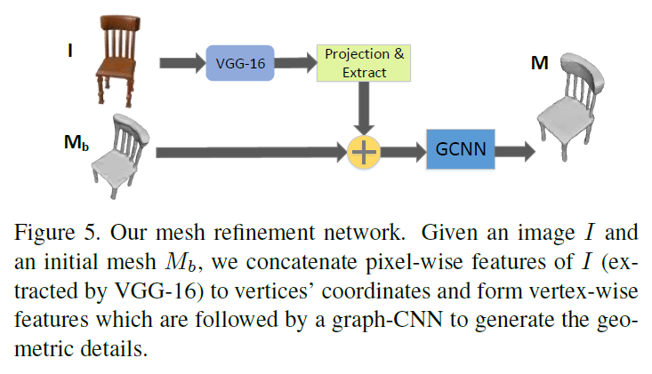
使用VGG-16作为图åƒçš„encoder。将vertices投影到feature mapä¸Šä½¿å…¶ä½œä¸ºé™„åŠ ç‰¹å¾concat到顶点åæ ‡coordinate上，然å使用Graph CNNsæ¥è¿›è¡Œdeformation。使用CD lossã€edge regularizationã€normal lossï¼Œå¹¶å°†å…¶åŠ æƒèµ·æ¥ã€‚
Topology Modification Approach（2019.9，Our lab）
ICCV2019《Deep Mesh Reconstruction From Single RGB Images via Topology Modification Networks》
概述
å•è§†å›¾meshé‡å»ºã€‚最大特点是æ出了修改mesh的拓扑结æ„的方法，通过使用在三角é¢ç‰‡ä¸é‡‡ç‚¹ã€ç„¶å输入MLP进行ä¸GTçš„è·ç¦»çš„估计，对误差大的三角é¢ç‰‡çš„使用阈值进行è£å‰ªã€‚但是生æˆçš„mesh并ä¸watertight
基本æµç¨‹ï¼šdeformation + modification + boundaryRefinement
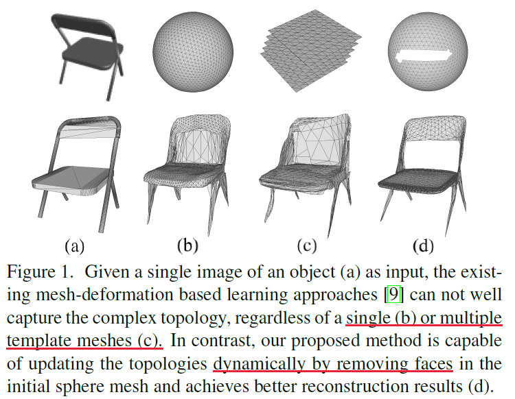
注：
- 创新点：Topology Modificationã€Boundary Refinement
- 是end-to-end的，å¯ä»¥ç”Ÿæˆå¤æ‚拓扑的shapeã€å¹¶ä¸”达到了SOTA
- å› ä¸ºè¾“å‡ºmeshä¸é—åˆã€‚也许å¯ä»¥ä½¿ç”¨å处ç†æ¥éª¤ï¼Œå³dense points sampling + normals估计，然å使用Poisson surface reconstructionæ¥è·å¾—é—åˆçš„mesh
- å„个subnet之间先分开è®ç»ƒï¼Œæœ€ååˆåœ¨ä¸€èµ·fine-tune
- AtlasNet也å¯ä»¥çœ‹ä½œæ˜¯squareçš„deformè·å¾—
åŸç†
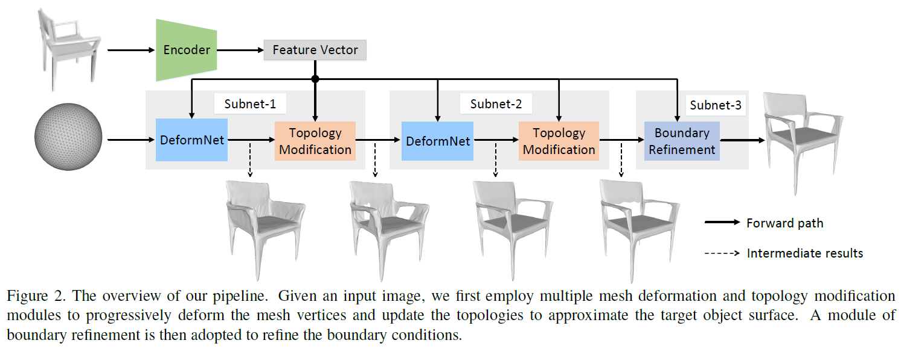
使用ResNet-18æå–图åƒ1024维特å¾$x$。对åˆå§‹mesh（çƒï¼‰è¿›è¡Œdeformationå†modification，进行两次，最åå†Boundary Refinement，最å输出。
deformation使用MLP预测顶点åæ ‡çš„offsetï¼›modification使用MLP预测误差然å阈值剔除；refinement使用boundary regularizer进行æ£åˆ™æ¶ˆé™¤zigzags
å®ç°
Mesh DeformNet
将图åƒç‰¹å¾$x$和点åæ ‡è¿›è¡Œconcat输入到MLP，输出åæ ‡çš„offset，å‰ä¸‰å±‚使用ReLU，最å一层使用tanh。
Topology Modification
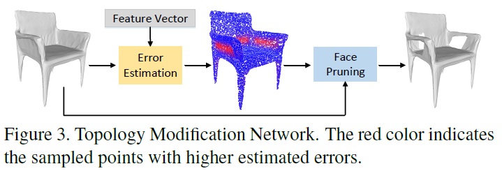
注æ„：æ¤æ“作会使得meshä¸é—åˆï¼ˆnot watertight）
- Error Estimation：ä»faceä¸Šé‡‡æ ·ä¸€äº›ç‚¹ï¼Œç„¶åä¸å›¾åƒç‰¹å¾$x$进行cancat，输入到MLPä¸ç„¶å输出per-point errors（distances to the ground truth），最åå–errorsçš„å¹³å‡å€¼å°±èƒ½å¾—到三角é¢ç‰‡çš„errors了。
- Face Pruning：使用固定的阈值进行剔除（高äºæ¤é˜ˆå€¼åˆ™å‰”除这个é¢ç‰‡ï¼‰ã€‚第一个subnetä¸ç¬¬äºŒä¸ªsubnet的剔除阈值ä¸ä¸€æ ·ï¼ˆç¬¬ä¸€ä¸ªé˜ˆå€¼0.1，第二个0.05）
Boundary Refinement
ä¸è¿›è¡Œrefinementçš„è¯ï¼Œå‰”除å的边缘会出ç°é”¯é½¿çŠ¶ã€‚（左：no refinement，å³ï¼šrefinement）
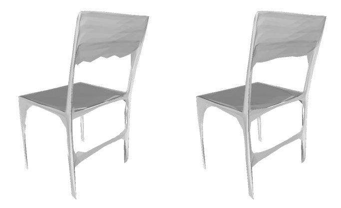
refinement的目的是使得边缘平滑ã€æ¶ˆé™¤é”¯é½¿ã€‚使用MLP，输入boundary vertex输出ä½ç§»é‡ï¼ˆä½¿å¾—边缘点å¯ä»¥ä½ç½®ç§»åŠ¨ï¼‰ã€‚使用boundary regularizeræ¥penalizes the zigzags（enforcing the boundary curves to stay smooth and consistent）：
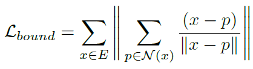
Training Objectives
在deformationå’Œrefinementä¸ä½¿ç”¨CD Loss
在error estimation（Modification）ä¸ä½¿ç”¨quadratic loss（输出的GT值是corresponding ground truth error）
在deformationä¸ä½¿ç”¨normal lossã€smoothness lossã€edge loss
Mesh R-CNN（2019.6）
ICCV2019《Mesh R-CNN》
paper下载：http://openaccess.thecvf.com/content_ICCV_2019/html/Gkioxari_Mesh_R-CNN_ICCV_2019_paper.html
概述
输入真å®ç°å®åœºæ™¯ä¸çš„å•å¼ 图片，æ¨æ–å…¶ä¸å‡ºç°çš„物体的3D mesh（相当äº2Dsegmentationä¸3Dreconstruction的结åˆï¼Œå³Mask R-CNNä¸3Dreconstruction（基äºdeformation）的结åˆï¼‰
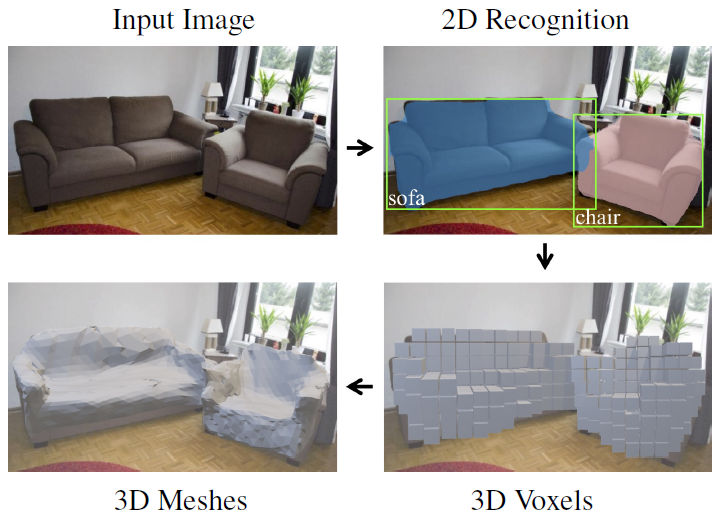
æµç¨‹ç®€è¿°ï¼šä½¿ç”¨RPNæ出proposal，然åæ ¹æ®åŒºåŸŸå¾—到coarse voxel representations，å†è½¬æ¢æˆmesh使用GCN进行deformation得到最åçš„mesh。先用coarse voxelæ˜¯å› ä¸ºvoxelå¯ä»¥è¿‘似任æ„的拓扑结æ„，é¿å…了deformationä¸èƒ½ä¿®æ”¹æ‹“扑的缺点。
在ShapeNetæ•°æ®é›†ä¸Šæ£€éªŒâ€œmesh prediction branchâ€çš„性能；在Pix3Dæ•°æ®é›†ä¸Šæ£€éªŒâ€œfull Mesh R-CNN systemâ€çš„性能。输入：å•å¼ 图片。输出：2D bounding boxã€labelã€2D maskã€3D mesh。
注：
- 网络trainable end-to-end
- 输出拓扑å¯ä»¥ä»»æ„ï¼ˆå› ä¸ºæ˜¯ä»voxel representation转æ¢å¾—到initial mesh）
- 作者æ出了Cubify过程将voxel转化为mesh（但是得到的mesh比较粗糙），åŒæ—¶å¯¹æ¯”了Marching Cubes（ä¸é«˜æ•ˆã€å®ç°å¤æ‚）
åŸç†
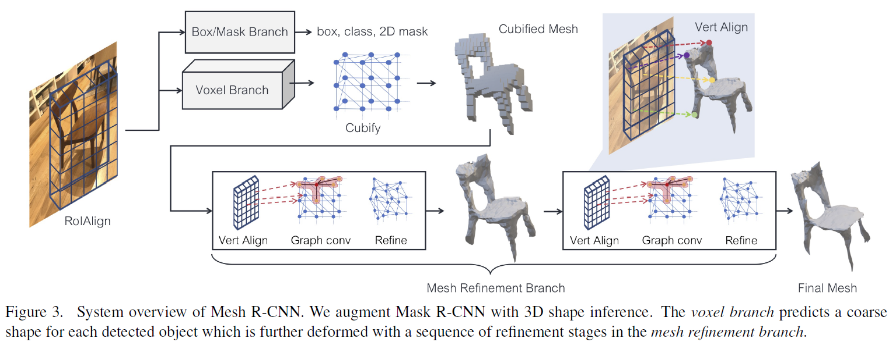
输入的图片通过backbone network（例如ResNet-50-FPN），å†é€šè¿‡RPN得到proposals。proposalså¯ä»¥ç”¨äºbounding boxçš„å›å½’ã€categories的分类ã€mask的预测ã€meshçš„VertAlignã€voxel branch的输入。
å…¶ä¸mesh predictorç”±voxel branchã€mesh refinement branch组æˆã€‚å³mesh predictoræ ¹æ®proposals区域使用3Då·ç§¯å¾—到voxel occupancy probabilities，å†è½¬æ¢ä¸ºmesh，最åæ ¹æ®VertAlign（其å®å°±æ˜¯å°†3Dvertex投影到feature map上得到该顶点特å¾çš„concat值）得到的特å¾ä½¿ç”¨GCN得到顶点的ä½ç§»é‡ï¼Œå†åœ¨â€œRefineâ€æ¥éª¤ä¸æ›´æ–°åæ ‡ã€‚å¤šæ¬¡ä½¿ç”¨è¯¥è¿‡ç¨‹å¾—åˆ°è¾“å‡ºã€‚
å®ç°
Voxel Branch
输出voxel occupancy probabilities。åˆå¯ä»¥çœ‹æ€æ˜¯3D版本的mask。
对RoIAlign得到的feature map使用small fully-convolutional network以ä¿æŒç‰¹å¾é—´çš„对应关系。
Voxel Loss：minimize the binary cross-entropy
Cubify: Voxel to Mesh
将得到的voxel转æ¢æˆtriangle mesh。先用阈值分割probabilities得到确定的voxel结æ„。然åå°†æ¯ä¸€ä¸ªvoxel立方体转æ¢æˆmesh立方体结æ„（在立方体的æ¯ä¸ªé¢ä¸ŠåŠ 上斜对角线）。é 在一起的edgesã€verticesã€faces共享。
ç”±æ¤å¾—到了watertightçš„mesh，且拓扑结æ„ä¸voxel相åŒï¼ˆäºæ ¼å¯ä»¥ä¸æ˜¯é›¶ï¼Œç›¸å½“äºåšäº†æ‹“扑上æ°å½“çš„åˆå§‹åŒ–）。
Marching Cubes通过æå–ç‰å€¼é¢æ¥è·å–surface，但是更为å¤æ‚，ä¸é«˜æ•ˆã€‚
Mesh Refinement Branch
Vertex Alignment（VertAlign）：将vertex投影到image planeå†ç”¨åŒçº¿æ€§æ’值。对äºç¬¬ä¸€ä¸ªstage则作为åˆå§‹çš„feature vector，往åçš„stage则concat到已有的feature vector上
Graph Convolution：使用GCNæ¥å˜æ¢ç‰¹å¾ï¼Œä¸€ä¸ªstage级è”several graph convolution layers
Vertex Refinement：更新顶点ä½ç½®$v_i’=v_i+tanh(W_{vert}[f_i;v_i])$，其ä¸$f_i$ã€$v_i$分别是顶点的特å¾å‘é‡å’Œç©ºé—´åæ ‡ã€‚This updates the mesh geometry, keeping its topology fixed.
Mesh Losses（用differentiable mesh sampling operation得到点集）：
å…¶ä¸çš„：
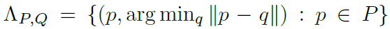
chamfer distance：最å°åŒ–è·ç¦»
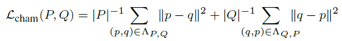
(absolute) normal distance：最å°åŒ–法å‘夹角
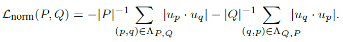
edge loss：使得edgeä¸èƒ½å¤ªé•¿
Laplacian loss：使得光滑
Occupancy Networks（2018.12）ğŸ‘
CVPR2019《Occupancy Networks: Learning 3D Reconstruction in Function Space》
概述
将物体å®ä½“表示为函数二分类问题（物体内部被å æ®çš„概ç‡ï¼‰ï¼Œæ出Multiresolution IsoSurface Extraction（MISE）算法用äºæå–ç‰å€¼é¢ï¼ˆè™½ç„¶æœ€å也使用了MarchingCubes），使用Fast-Quadric-Mesh-Simplification算法简化得到的mesh，使用一ã€äºŒé˜¶ä¿¡æ¯æ¥è¿›è¡Œmeshçš„refine。其ä¸æ出的MISEæ¯”ä¼ ç»Ÿçš„MarchingCubesæ›´åŠ é«˜æ•ˆå’Œå†…å˜èŠ‚çœï¼Œæå–çš„meshæ›´åŠ ç²¾ç»†ã€‚å–得了SOTA的效æœã€‚
注：
- 函数表达的使用，使得å¯ä»¥è¡¨è¾¾ä»»æ„的拓扑结æ„ã€å¹¶ä¸”分辨ç‡é«˜ã€åˆä¸æ¶ˆè€—过多的内å˜ï¼ˆä¸voxel相比）
- å¯ä»¥æ”¯æŒå¤šç§ç±»å‹çš„3Dæ•°æ®è¾“入（其å®åªè¦å°†3Dæ•°æ®è½¬å˜ä¸ºshape vector输入å³å¯ï¼‰
- 优点：high resolution closed surfaces without self intersections and does not require template meshes
- 还å¯ä»¥ç”¨äºå¦ä¹ 得到probabilistic latent variable models（未详述）
- 但是MISE算法需è¦é€‰å–超å‚数，å³initial resolution，作者选å–了$32^3$
- 也å¯ä»¥ç”¨äºæå–法å‘（æœç€$\frac{\partial Probability}{\partial Location}$æ–¹å‘移动使得Probabilityå¢åŠ ，å³æ³•å‘）
- In total, our inference algorithm requires 3s per mesh
- å¯ä»¥ä½¿ç”¨KD-Treeæ¥å¿«é€Ÿè®¡ç®—Chamfer-L1 distance
- å¯ä»¥å°†å¤§é‡çš„shapeç¼–ç å…¥MLPsä¸ï¼Œè€ŒMLPsçš„å‚æ•°é‡ä¸å¤š
- ONet == Occupancy Network
åŸç†
使用MLP，输入$(x=形状特å¾,p=点åæ ‡)$，输出$o=å æ®æ¦‚ç‡\in[0,1]$
使用由粗到细的多分辨ç‡çš„MarchingCubesè·å–ç‰å€¼é¢ï¼ˆæ€æƒ³ä¸Octree Generating Networks类似），然å简化mesh，最årefine mesh。
å®ç°
Occupancy Networks
定义
已知对物体的observation $x\in\mathcal{X}$（例如图片的特å¾å‘é‡ï¼‰ï¼Œä»¥åŠç©ºé—´ä¸çš„点$p\in\mathbb{R}^3$
那么æ„é€ ä¸€ä¸ªMLP $f_\theta$æ˜ å°„ï¼Œè¾“å…¥æ˜¯pair $(p,x)$，输出是点$p$被å æ®çš„概ç‡å€¼ï¼Œå³ï¼š
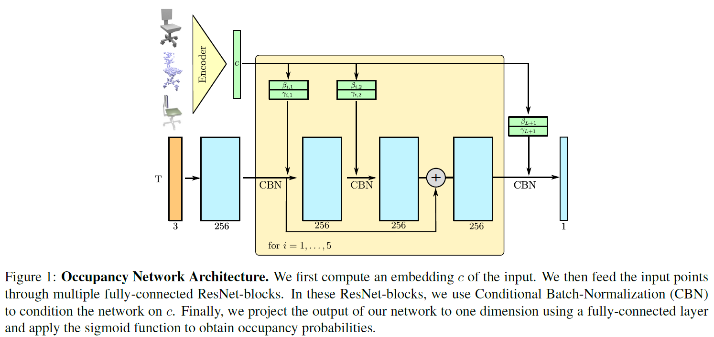
è®ç»ƒ
一个batch有$|\mathcal{B}|$个è®ç»ƒç‰©ä½“ï¼Œä¸€ä¸ªç‰©ä½“é‡‡æ ·$K$个点。那么è®ç»ƒæ—¶æ‰€ç”¨çš„æŸå¤±å‡½æ•°ä¸ºï¼š
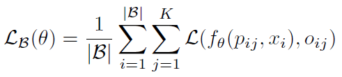
求出$\frac{\partial \mathcal{L_B}}{\partial x}$å’Œ$\frac{\partial \mathcal{L_B}}{\partial \theta}$å³å¯æ¢¯åº¦å›ä¼ æ›´æ–°å‚数。
é‡‡æ ·
作者å‘ç°åœ¨bounding volume of the ground truth meshä¸å‡åŒ€é‡‡æ ·points效æœæœ€ä½³ã€‚
细节
å®é™…上MLPç”±5 ResNet blocks组æˆã€‚并且使用conditional batch normalization
- 对äºå•è§†å›¾è¾“入（Single Image 3D Reconstruction），使用ResNet18ç¼–ç
- 对äºç‚¹äº‘输入（Point Cloud Completion），使用PointNetç¼–ç
- 对äºä½“ç´ è¾“å…¥ï¼ˆVoxel Super-Resolution），使用3D CNNç¼–ç
Inference
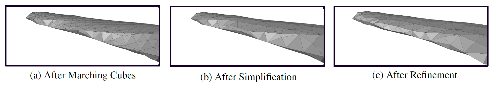
Multiresolution IsoSurface Extraction（MISE）
基本åŸç†ï¼šincrementally building an octree
效æœï¼šextract high resolution meshes without densely evaluating all points
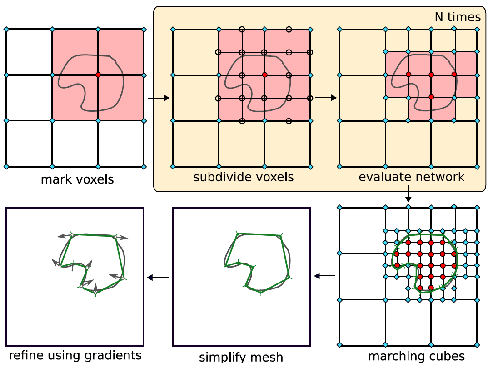
既有occupiedå’Œunoccupiedçš„grid被认定为active（light red部分），å³éœ€è¦ç»†åˆ†ã€‚ä¸æ–é‡å¤æ¤è¿‡ç¨‹ã€‚最å使用MarchingCubesè·å¾—ç‰å€¼é¢ã€‚initial resolution = $32^3$ = 32768 points
Fast-Quadric-Mesh-Simplification algorithm
使用这个算法进行简化得到的mesh（åˆå¹¶è¿‡å¤šçš„edgesï¼Œåˆ é™¤è¿‡å¤šçš„triangles）
æ¤ç®—法ä¸æ˜¯ä½œè€…æ出的
Refine the output mesh
效æœï¼šremoves the discretization artifacts of the Marching Cubes
使用一ã€äºŒé˜¶ä¿¡æ¯æ¥refinement。ä»è¾“出的mesh的表é¢ä¸Šé‡‡ç‚¹$p_k$，然å最å°åŒ–：
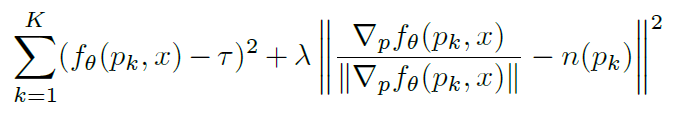
å…¶ä¸$n(p_k)$表示$p_k$处的法å‘。$\lambda=0.01$。第二项使用了梯度信æ¯ï¼Œå¯ä»¥ä½¿ç”¨Double-Backpropagation算法快速å®ç°ã€‚
å®éªŒ
ä½¿ç”¨çš„æŒ‡æ ‡ï¼švolumetric IoUã€Chamfer-L1 distanceã€normal consistency score
æ— shape vector输入时，检验representation power
This gives us an upper bound on the results we can achieve when conditioning our representation on additional input
åšæ³•ï¼šå°†ç‰©ä½“ç¼–ç 到512ç»´çš„å‘é‡ã€‚然åè®ç»ƒOccupancy Networksä»è¿™512ç»´å‘é‡ä¸æ¢å¤mesh。
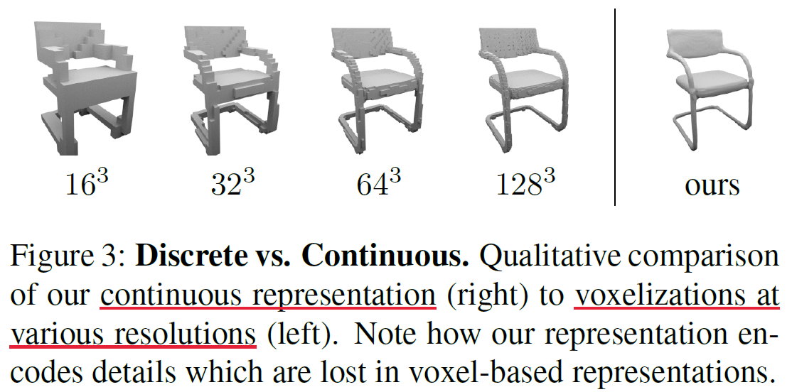
有shape vector输入时（å•è§†å›¾ã€ç‚¹äº‘ã€ä½“ç´ ï¼‰ï¼Œé‡å»ºmesh
å³å•è§†å›¾é‡å»ºmeshã€å°‘é‡ç‚¹äº‘é‡å»ºå‡ºé«˜åˆ†è¾¨ç‡çš„meshã€ä½åˆ†è¾¨ç‡ä½“ç´ é‡å»ºå‡ºé«˜åˆ†è¾¨ç‡çš„mesh
å•è§†å›¾é‡å»ºï¼šä½¿ç”¨3D-R2N2ã€Point Set Generating Networks（PSGN）ã€Pixel2Meshã€AtlasNet作为比对对象
在ShapeNetæ•°æ®é›†ä¸Šçš„效æœï¼š
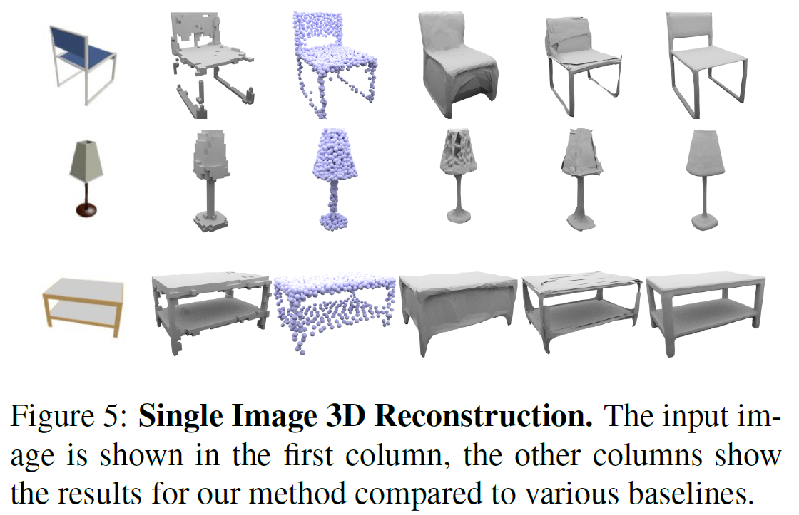
在KITTIå’ŒOnlineProductsæ•°æ®é›†ä¸Šçš„效æœï¼ˆçœŸå®æ•°æ®é›†ï¼‰ï¼š
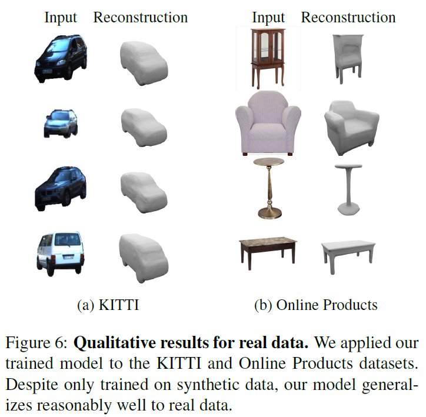
噪声点云输入：将3D-R2N2ã€PSGN改为点云输入，以åŠDeep Marching Cubes（DMC）作为比对对象
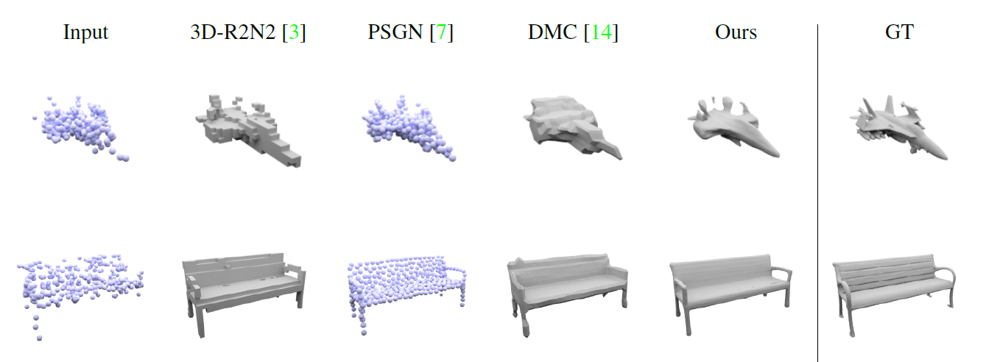
ä½“ç´ è¾“å…¥ï¼šå°†ç›¸åº”çš„è¾“å…¥æ”¹å˜ä¸ºä½“ç´ è¾“å…¥å³å¯
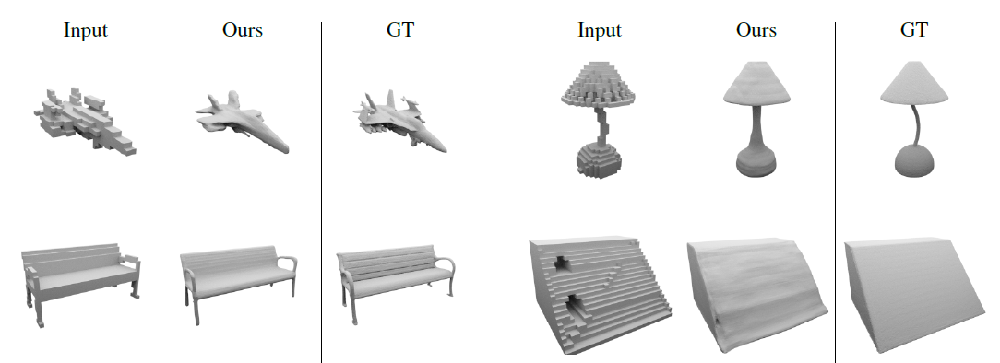
使用probabilistic latent variable models生æˆæ¨¡å‹ï¼ˆæ— 监ç£ï¼‰
We examine the generative capabilities of occupancy networks by adding an encoder to our model and generating unconditional samples from this model
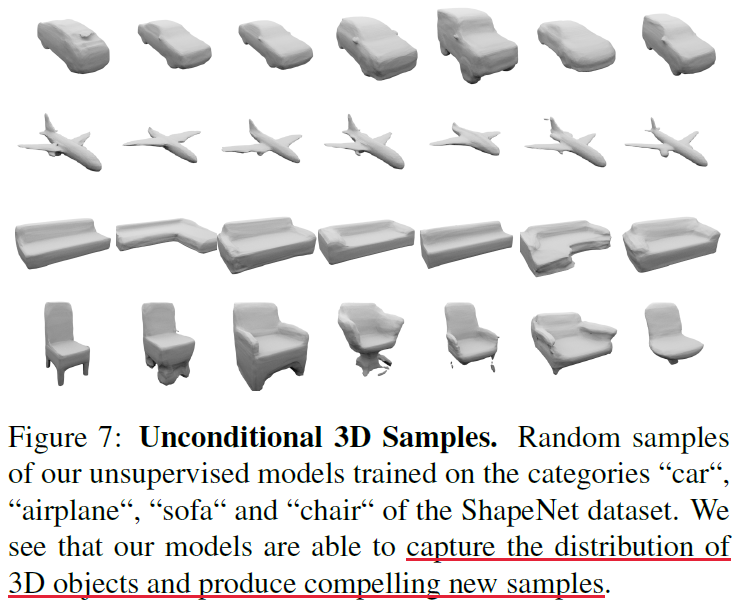
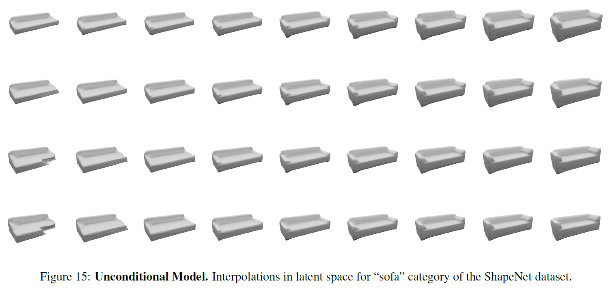
Ablation Study
Effect of sampling strategy（第一ç§uniform sampling效æœæœ€å¥½ï¼‰ï¼š
sampling 2048 points uniformly in the bounding volume of the ground truth mesh（uniform sampling）
sampling 1024 points inside and 1024 points outside mesh（equal sampling）
sampling 1024 points uniformly and 1024 points on the surface of the mesh plus some Gaussian noise with standard deviation 0.1（surface sampling）
- Effect of architecture（æ¢ç©¶äº†ä¸¤ç§ç»“æ„çš„å½±å“）：
- remove the conditional batch normalization and replace it with a linear layer
- remove all ResNet blocks in the decoder and replace them with linear blocks
NOCS maps（2019.7）
NIPS2019《Multiview Aggregation for Learning Category-Specific Shape Reconstruction》
paper下载：https://arxiv.org/abs/1907.01085
概述
è¾“å…¥å¤šå¼ RGB图，输出surface上的点云，甚至还能预测camera pose。æ出使用normalized object coordinate space maps（NOCS maps）æ¥è¿›è¡Œmultiview的处ç†ã€‚其本质类似äºæ·±åº¦å›¾ã€‚NOCS maps内的æ¯ä¸ªç‚¹éƒ½å¯¹åº”到NOCSä¸çš„一个3D点，NOCS就是unit cubeçš„3D点云空间。multiviewçš„ä¿¡æ¯åˆ©ç”¨é€šè¿‡3D点的unionæ¥å®ç°ï¼Œé€šè¿‡permutation equivariant layerså®ç°åœ¨feature层级的信æ¯ç»“åˆã€‚
注：
- NOCS shape level：点集å–并集；feature level：permutation equivariant layers
- ä¸depth map的区别：
- depth mapä¸çš„æ¯ä¸ªç‚¹æ˜¯æ·±åº¦å€¼ã€‚需è¦ï¼ˆx，y）åæ ‡ã€camera poseã€depth valueæ‰èƒ½æ¨æ–得到3D空间ä¸çš„点
- NOCS mapsä¸çš„æ¯ä¸ªç‚¹å°±æ˜¯3D空间（æ¤å¤„是NOCS空间）ä¸çš„空间åæ ‡ç‚¹ã€‚æ®æ¤ç”šè‡³è¿˜èƒ½æ¨æ–出camera pose
åŸç†
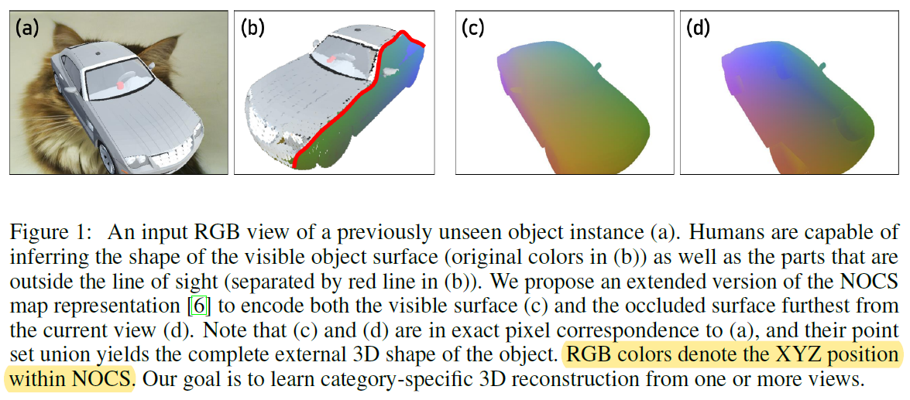
输入图（a），利用CNN输出预测（c）ã€ï¼ˆd）以åŠç›¸å¯¹åº”çš„mask。其ä¸ï¼ˆc）ã€ï¼ˆd）图ä¸çš„æ¯ä¸ªåƒç´ 对应了NOCSä¸çš„一个3D点。（c）是ä»è¿™ä¸ªè§†è§’看的å‰è§†NOCS maps，（d）是ä»èƒŒå看的NOCS maps，两者åˆç§°NOX maps。这些3D点的并集就是surface上的points了。

NOCS是å•ä½ç«‹æ–¹ä½“空间。将NOCS的物体投影得到NOCS maps。
å®ç°
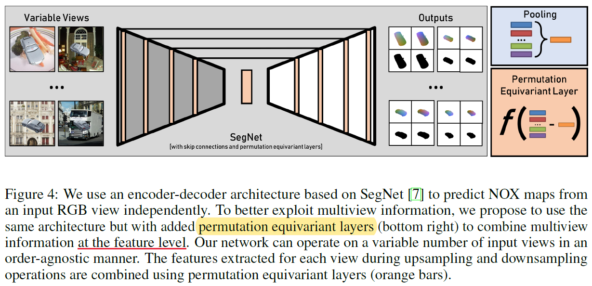
利用类似äºSegNet的结æ„æ¥è¾“出图片。输入3通é“RGB图，输出8通é“图åƒï¼ˆ3+3+1+1=front NOCS map+back NOCS maps+front mask+back mask）ã€
那么输出的点云就是所有3Dåæ ‡çš„å¹¶é›†ã€‚
æ¨æ–çš„åŒæ—¶æ¨æ–maskå¯ä»¥å‡å°‘计算loss时的计算é‡ã€‚总的loss函数是maskçš„binary cross entropy lossä¸NOCS pixelsçš„L2范数æŸå¤±çš„和。
使用permutation equivariant layers（图ä¸æ©™è‰²éƒ¨åˆ†ï¼‰æ¥åœ¨ç‰¹å¾å±‚级èåˆä¿¡æ¯ã€‚相对äºå°†ç‰¹å¾å‡å»å‡å€¼ï¼ˆå³å›¾ä¸å³ä¸Šè§’çš„pooling为avg pooling）å†è¿›è¡Œé线性æ“作（å³å›¾ä¸å³ä¸‹è§’嵌套的函数$f(\cdot)$）。
网络的输出还å¯ä»¥åŒ…括texture of the occluded surface of the object，那么就å¯ä»¥é¢„测物体的纹ç†äº†ã€‚
结æœ
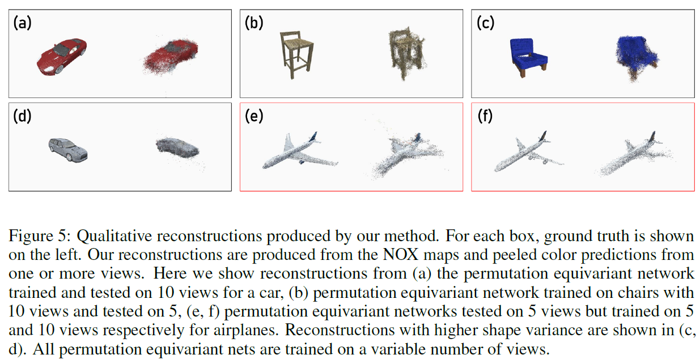
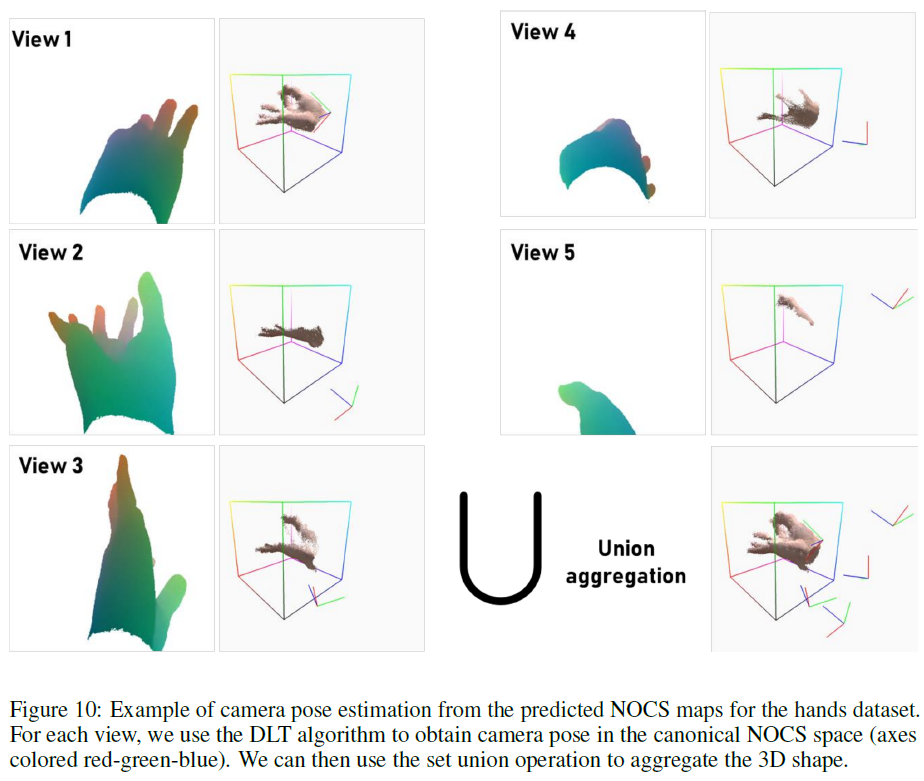
MVSNet（2018.4）ğŸ‘
ECCV2018《MVSNet: Depth Inference for Unstructured Multi-view Stereo》
paper下载： http://openaccess.thecvf.com/content_ECCV_2018/html/Yao_Yao_MVSNet_Depth_Inference_ECCV_2018_paper.html
概述
端到端的多视图的depth mapæ¨æ–。先用CNNæå–特å¾ï¼Œç„¶åæ„é€ cost volume，然å用3D CNNæ¥regularize and regress得到åˆå§‹depth map，然årefine得到最终输出。超越了SOTA，而且更快，泛化能力强。
注：
输入one reference image，以åŠseveral source images，那么MVSNet infers the depth map for the reference image
使用differentiable homography warping operationæ¥å°†ç›¸æœºçš„å‡ ä½•å…³ç³»ç¼–ç 进入MVSNetä¸ï¼Œä»2D featuresä¸å¾—到3D cost volume，使得end-to-endè®ç»ƒæˆä¸ºå¯èƒ½ã€‚
为了å¯ä»¥æ¥å—ä»»æ„æ•°é‡çš„视图输入，使用variance-based metric，æ¥å°†å¤šä¸ªfeatureså˜æˆone cost feature in the volume。然åæ¤cost volumeç»è¿‡3DCNN便得到initial depth map。然åå†æ¬¡åˆ©ç”¨reference imageæ¥refine depth map（改善边界区域的准确ç‡ï¼‰ã€‚
æ¨æ–çš„depth map是per-view depth map estimation
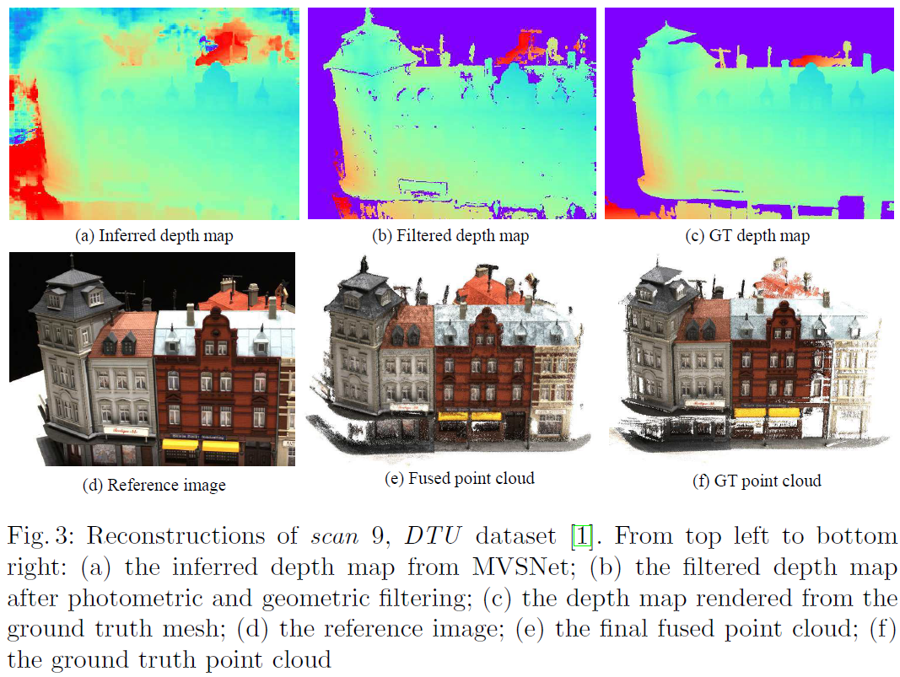
åŸç†
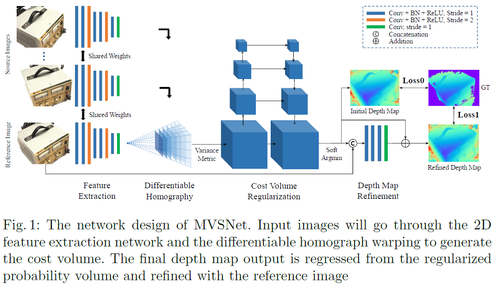
利用CNNæå–feature maps，使用homographyå°†feature mapså˜ä¸ºfeature volumes，å†é€šè¿‡è®¡ç®—Cost Metric将多个feature volumes转å˜ä¸ºåªæœ‰ä¸€ä¸ªçš„cost volume（使得å¯ä»¥å¤šè§†å›¾è¾“入），å†
å®ç°
Image Features
设有$N$å¼ å›¾åƒ$\{I_i\}_{i=1}^N$，丢到CNN里得到了$N$个特å¾å›¾$\{F_i\}_{i=1}^N$。æ¯ä¸ªç‰¹å¾å›¾éƒ½æ˜¯32通é“（记F=32）的，尺寸是$\frac{W}{4}\times\frac{H}{4}$（丢到CNN里尺寸缩å°äº†4å€ï¼‰
Cost Volume
将reference image记作$I_1$，将source images记作$\{I_i\}_{i=2}^N$
Differentiable Homography
å°†source images feature map利用Homography matrix转å˜ä¸ºreference image的视角（åˆç§°wrapï¼‰ï¼Œæ ¹æ®reference cameraçš„ä¸åŒæ·±åº¦å€¼ï¼ˆD个）由æ¤å½¢æˆäº†D个fronto-parallel planes。由äºä¸€å…±æœ‰N个images，所以有N个features volume$\{V_i\}_{i=1}^N$，其尺寸是$\frac{W}{4}\times\frac{H}{4}\times D\times F$（其ä¸F是feature map的通é“æ•°32）。å³$\frac{W}{4}\times\frac{H}{4}\times D$å†…çš„ä¸€ä¸ªå…ƒç´ æ˜¯ä¸€ä¸ªFç»´çš„vector。利用了åŒçº¿æ€§æ’值。
通过这æ¥å°±å°†ç›¸æœºçš„å‡ ä½•å…³ç³»åµŒå…¥åˆ°volumeä¸å»äº†ã€‚
Cost Metric
è¿™æ¥å°†multiple feature volumes$\{V_i\}_{i=1}^N$转å˜ä¸ºåªæœ‰ä¸€ä¸ªçš„cost volume$C$，本质是计算方差
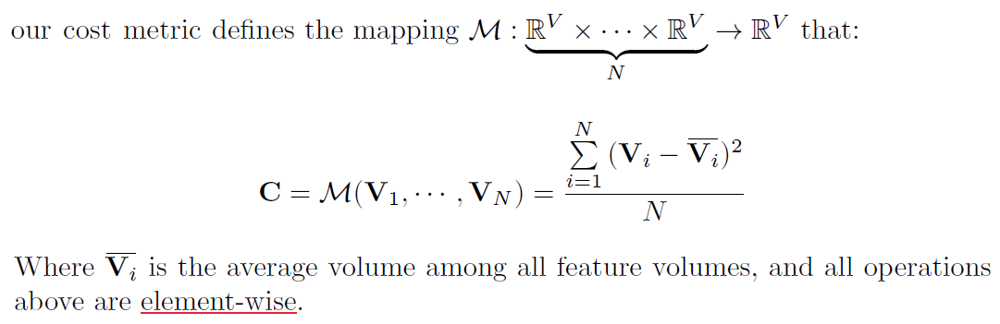
our variance-based cost metric explicitly measures the multi-view feature difference
Cost Volume Regularization
作者说å¯èƒ½ä¼šç”±äºnon-Lambertian surfacesã€occlusionsé€ æˆå¾—到的cost volume被noise-contaminated，而且需è¦åŠ 上smoothness constraints以æ¨æ–depth map。
使用multi-scale 3D CNN（就åƒæ˜¯3D版本的UNet）æ¥åšæ£åˆ™ã€‚3DCNN的最å一层输出1通é“çš„volume，然å沿ç€depth directionåšsoftmax operation得到probability volume。æ¤probability volumeå¯ä»¥ç”¨äºper-pixel depth estimation或measure the estimation con dence。注æ„：probability volume尺寸是$\frac{W}{4}\times\frac{H}{4}\times D \times 1$
Depth Map
Initial Estimation
沿ç€depth direction计算probability volume在æ¯ä¸ªåƒç´ 上的深度的期望值，作为åˆå§‹çš„深度估计。
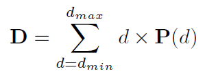
那么输出depth map的尺寸就是$\frac{W}{4}\times\frac{H}{4} \times 1$
Probability Map
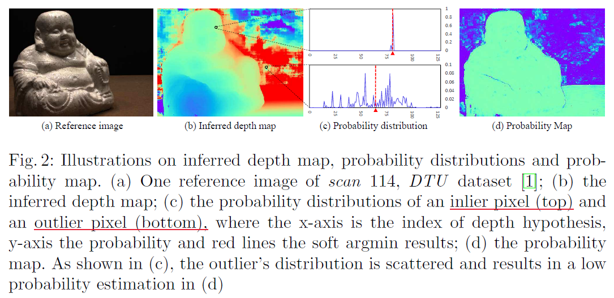
For those falsely matched pixels, their probability distributions are scattered and cannot be concentrated to one peakï¼Œå› æ¤å¯ä»¥ä½œä¸ºquality of a depth estimationçš„è¡¡é‡ã€‚
Depth Map Refinement
depth map的边界å¯èƒ½ä¼šå¹³æ»‘æ‰ï¼Œå› æ¤ä½¿ç”¨reference image帮助è·å¾—边缘。
å°†initial depth map（缩放到0~1的数值范围先）和resized reference image进行concat得到4通é“的输入，输入到2DCNNä¸ï¼Œè¾“出depth residual。ä¸åŸinitial depth mapç›¸åŠ å°±å¾—åˆ°refi ned depth map
Loss
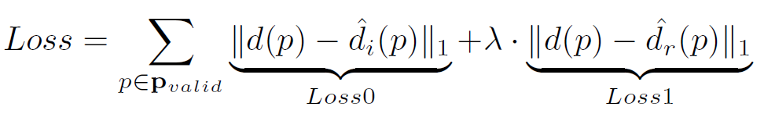
分别计算initial depth estimationã€refi ned depth estimationä¸GT depth mapçš„L1æŸå¤±ï¼Œæ±‚和。其ä¸$d(p)$是GT，$\hat d_i(p)$是initial depth estimation，$\hat d_r(p)$是refi ned depth estimation。$p_{valid}$指åªè®¡ç®—GT有有效数æ®çš„部分。